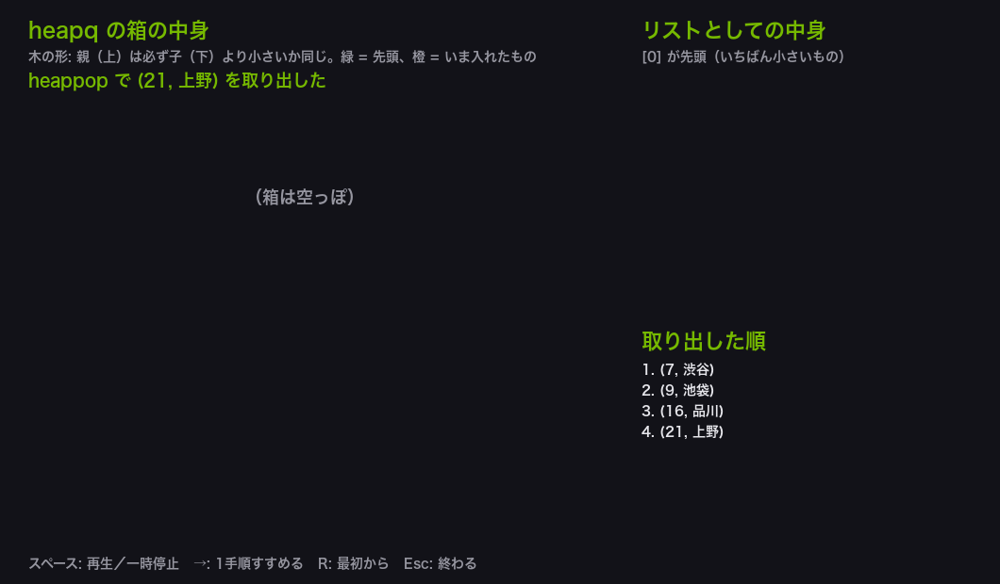
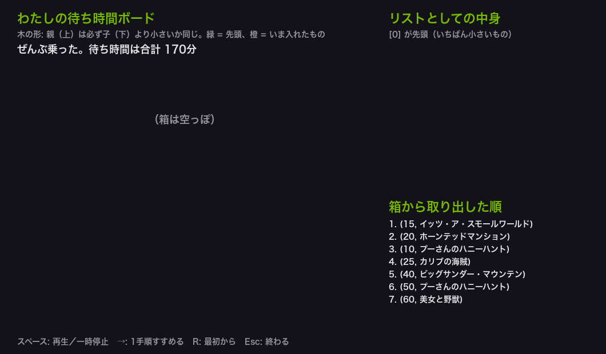
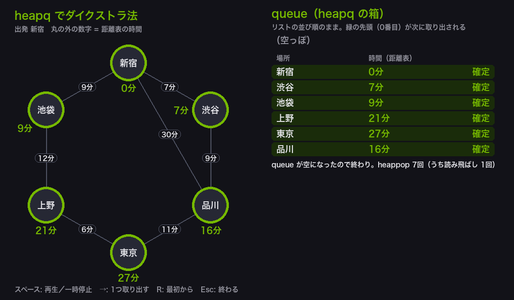
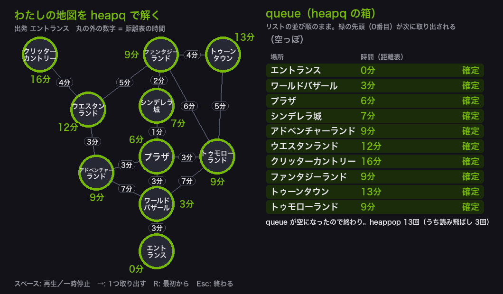

例題とクリエイティブ演習
今回も、例題（参考）を動かして heapq とダイクストラ法の進み方をつかんだら、 クリエイティブ演習で、第5回に続いてディズニーランドを題材に自分の作品を作ります。 演習1で「待ち時間の短い順に回る待ち時間ボード」を作り、演習2で第5回の自分の地図を heapq 版のダイクストラ法で解き直します。
演習1のアトラクションと待ち時間はひな形の例です。待ち時間は、自分の感覚で決めても、 東京ディズニーリゾート公式アプリの待ち時間を見て決めてもかまいません。 演習2のひな形の地図は第5回と同じです（東京ディズニーリゾート公式ブログ 「開園当時のマップをご紹介」の、今のマップをもとにしたもの）。 まず作業フォルダを用意します。
VS Code でフォルダとファイルを用意する
Step 1: 作業フォルダを作る
- デスクトップに AL2 という名前のフォルダを作る（後期の授業ではずっと同じフォルダを使う）
- AL2 フォルダの中に No06 という名前のフォルダを作る
└── AL2/
├── No05/ ← 前回のファイル
└── No06/ ← 第6回はここに保存
Step 2: VS Code でフォルダを開く
- Visual Studio Code を起動する
- メニューから 「ファイル」→「フォルダーを開く」を選ぶ
- Step 1 で作った AL2/No06 フォルダを選んで開く
左側のエクスプローラーに No06 フォルダの中身が表示される（最初は空）。
Step 3: 例題ごとにファイルを作って実行する
- 左側エクスプローラーの No06 の横にある 新しいファイルアイコンをクリック
- ファイル名を入力して Enter（例題1なら
AL2-06-ex1.py） - 例題のコードブロック右上の コピーボタンをクリック
- VS Code の編集画面に 貼り付ける（Ctrl+V / Cmd+V）
- 保存する（Ctrl+S / Cmd+S）
- 右上の ▷（再生ボタン）をクリックして実行する
今回作るファイル（演習）: AL2-06-ex1.py, AL2-06-ex2.py。参考のコードを保存するときは、名前の最後に -ref を付ける
- 参考: 完成したコード（heapq の使い方と、第5回と同じ新宿の路線図を heapq で解くもの）。コメントを読みながら動かし、窓で heapq の箱の中身の変わり方を見る
- クリエイティブ演習: ディズニーランドの待ち時間ボードと、第5回の地図を heapq で解き直すひな形。穴埋めはありません。 そのまま動くので、まず実行してから、★ の付いた部分（待ち時間・お知らせ・ひとこと・地図・行き先・案内文）を自由に書き換えて、自分の作品にする
ファイル名は、参考が AL2-06-ex1-ref.py（ref = reference、参考）、
演習が AL2-06-ex1.py のように分けます（同じ名前にすると上書きされてしまうため）。
標準課題で使うのは演習1の自分の待ち時間ボードと、演習2の自分の地図です。
書き換えたあとに動かなくなったら、ターミナルや窓に出る説明を読んで直します（各演習の「うまくいかないとき」の表も見る）。
heapq の箱と距離表を絵で表示する道具（pygame）
今回の例題と演習も、第2〜5回と同じく pygame（パイゲーム: Python で絵やゲームの画面を作る道具）の窓で表示します。 例題1・演習1は heapq の箱の中身を木の形とリストで、例題2・演習2はグラフと queue と距離表を並べて見せます。
1. pygame が入っているか確かめる
第2〜5回で入れた人は、そのまま使えます。VS Code の「ターミナル」→「新しいターミナル」で次の1行を打ちこみ、Enter を押します。
2.6.1 のような数字が出れば入っています。
ターミナル（Windows）
py -c "import pygame; print(pygame.version.ver)"
ModuleNotFoundError と出たら、まだ入っていません。次の1行で入れます
（うまくいかないときは第2回の「うまくいかないとき」の表を見る）。
ターミナル（Windows）
pip install pygame
Mac の人は pip のかわりに pip3、py のかわりに python3 と打つ。
2. 窓の操作（第2〜5回と同じ）
| キー | 動き |
|---|---|
| スペース | 自動で再生／一時停止 |
| →（右矢印） | 1手順だけ進める（例題2・演習2では、heappop 1回ぶん。標準課題の図を描くときに便利） |
| R | 最初からやり直す |
| Esc または窓の × | 終わる（窓を閉じるとプログラムも終わる） |
窓に絵を描くコードは、各ファイルのいちばん下 （「ここから下は、…pygame の窓に…表示するための道具です」と書いた行より下）に入っています。そこは読まなくてかまいません。 ファイルは1つだけで動きます。ターミナルに結果が出たあとで窓が開きます。窓が見当たらないときは、タスクバー（Mac は Dock）を見てください。
今回のキーワード
| 用語 | 説明 |
|---|---|
| 優先度付きキュー | 入れたものの中から、いつでも「いちばん小さいもの」を速く取り出せる入れもの。 |
| heapq | Python で優先度付きキューを使うための道具。import heapq と書いて使う。箱はふつうのリスト。 |
| heappush | heapq.heappush(箱, 値) で、箱に値を1つ入れる。 |
| heappop | heapq.heappop(箱) で、箱の中のいちばん小さい値を取り出す。 |
| 組（タプル） | (16, "品川") のように ( ) で囲んだ値のまとまり。くらべるときは1番目の値から順にくらべる。 |
| 読み飛ばし | 箱から取り出した場所がすでに確定しているとき、古い組なので何もせず次を取り出すこと。heapq 版のダイクストラ法で必要になる。 |
heapq の箱を確かめて、自分の待ち時間ボードを作る
例題1（参考）は、heapq の箱に数や (時間, 駅名) の組を入れて、取り出す順番を確かめるプログラムです。
窓では、箱の中身を木の形（1章の図「heapq が守っているきまり」と同じ形）とリストで並べて、1手順ずつ見せます。
演習1では、同じしくみで待ち時間の短い順に回る、自分の待ち時間ボードを作ります。
| コードの部分 | やっていること |
|---|---|
heapq.heappush(numbers, value) | 箱に1つ入れる。入れたあとも「先頭がいちばん小さい」が保たれるように、heapq が中身を並べかえる |
numbers[0] | 取り出さずに、先頭（いちばん小さい数）を見る |
smallest = heapq.heappop(numbers) | いちばん小さい数を取り出す。箱からは消える |
minutes, station = heapq.heappop(tasks) | 取り出した組を、時間と駅名の2つに分けて受け取る |
record(…) | 窓に表示するために、そのときの箱の中身を写して残す（アルゴリズムには関係ない） |
窓の読み方は次のとおりです。
| 窓に表示されるもの | 読み方 |
|---|---|
| 左: 木の形 | [0] がいちばん上、その子が [1] と [2]、[1] の子が [3] と [4]…。緑 = 先頭（次に取り出されるもの）、橙 = いま入れたもの |
| 右上: リストとしての中身 | Python のリストに入っている本当の並び。木の [番号] と同じ順 |
| 右下: 取り出した順 | heappop で取り出したものを、取り出した順に並べたもの。小さい順になっている |
例題1（参考）── 完成したコード。コメントを読みながら動かし、窓のアニメーションと見比べて進み方をつかむ。保存するなら AL2-06-ex1-ref.py の名前で
AL2-06-ex1-ref.py
Python ── AL2-06-ex1-ref.py # heapq の使い方: 入れた順番に関係なく、いちばん小さいものから取り出せる箱 import heapq log = [] # 窓の表示に使う記録 taken = [] # 取り出したものを、取り出した順に並べる（窓の表示に使う） def record(text, kind, box, item=None): """いまの箱の中身を、窓の表示のために写して残す（kind は "push"・"pop"・"info" のどれか）""" hot = box.index(item) if item in box else None log.append((text, kind, list(box), hot, list(taken))) # ---- 前半: 数を入れて取り出す ---- numbers = [] # heapq の箱。ふつうのリストを使う record("前半: 空っぽの箱に、数を1つずつ heappush で入れる", "info", numbers) for value in [8, 3, 5, 1, 9, 2]: heapq.heappush(numbers, value) # 箱に1つ入れる print(f"{value} を入れた → 中身: {numbers}") record(f"heappush で {value} を入れた", "push", numbers, value) print() print("中身の並びはバラバラに見えるが、先頭は必ずいちばん小さい数になっている") print("いまの先頭:", numbers[0]) # numbers[0] で、取り出さずに先頭を見る print() print("取り出す順番") while len(numbers) > 0: smallest = heapq.heappop(numbers) # いちばん小さい数を取り出す（箱からは消える） taken.append(smallest) print(f" 取り出した: {smallest} 残り: {numbers}") record(f"heappop で {smallest} を取り出した（いちばん小さい数）", "pop", numbers) print() print("入れた順番は 8, 3, 5, 1, 9, 2 だが、取り出す順番は小さい順になる") print("-" * 52) print() # ---- 後半: (時間, 駅名) の組を入れて取り出す ---- taken = [] tasks = [] # 組どうしは1番目の数（時間）でくらべる。1番目が同じときは、2番目（駅名）でくらべる record("後半: (時間, 駅名) の組を入れる。組は1番目の数（時間）でくらべる", "info", tasks) for pair in [(16, "品川"), (7, "渋谷"), (21, "上野"), (9, "池袋")]: heapq.heappush(tasks, pair) record(f"heappush で {pair} を入れた", "push", tasks, pair) print("(時間, 駅名) の組を入れて取り出す") while len(tasks) > 0: minutes, station = heapq.heappop(tasks) # 取り出した組を、時間と駅名に分けて受け取る taken.append((minutes, station)) print(f" {minutes}分の {station} を取り出した") record(f"heappop で ({minutes}, {station}) を取り出した", "pop", tasks) print() print("1番目の要素（時間）が小さい順に出てくる") print("ダイクストラ法では、この形をそのまま使う") # ============================================================ # ここから下は、heapq の箱の中身を pygame の窓に「木の形」と「リスト」で表示するための道具です。 # 中身は読まなくてかまいません（heapq の使い方は上の部分にあります）。 # 操作: スペース = 再生／一時停止 → = 1手順すすめる R = 最初から Esc = 終わる # ============================================================ import os os.environ.setdefault("PYGAME_HIDE_SUPPORT_PROMPT", "1") # pygame のあいさつ文を出さない import pygame WIDTH, HEIGHT = 1060, 620 # 窓の大きさ（ピクセル） STEP_MS = 1100 # 1手順あたりの時間（ミリ秒） BG = (18, 18, 24) LINE = (80, 84, 100) NODE = (38, 40, 52) TEXT = (230, 230, 235) SUB = (150, 150, 160) GREEN = (118, 185, 0) AMBER = (255, 184, 0) RED = (255, 110, 110) WHITE = (255, 255, 255) # 日本語が出せるフォントの場所（Mac → Windows の順にさがす） FONT_FILES = [ "/System/Library/Fonts/ヒラギノ角ゴシック W6.ttc", "/System/Library/Fonts/ヒラギノ角ゴシック W3.ttc", "/System/Library/Fonts/Hiragino Sans GB.ttc", "C:/Windows/Fonts/meiryo.ttc", "C:/Windows/Fonts/YuGothM.ttc", "C:/Windows/Fonts/msgothic.ttc", ] FONT_NAMES = "hiraginosans,yugothic,meiryo,msgothic,notosanscjkjp,notosansjp" def _font(size, bold=False): for path in FONT_FILES: if os.path.exists(path): return pygame.font.Font(path, size) return pygame.font.SysFont(FONT_NAMES, size, bold=bold) def _fit(font, text, width): """text が width ピクセルに収まらなければ、後ろを「…」にして縮める。""" if font.size(text)[0] <= width: return text while text and font.size(text + "…")[0] > width: text = text[:-1] return text + "…" def _shrink(t, width): """t（文字の絵）が width より広ければ、width に収まるように縮める。""" if t.get_width() <= width: return t k = width / t.get_width() return pygame.transform.smoothscale(t, (int(t.get_width() * k), int(t.get_height() * k))) def _lines(item): """箱の中の1つを、木の札に書く1〜2行の文字にする。(40, "名前") の組なら「40分」と「名前」の2行。""" if type(item) == tuple: return [f"{item[0]}分", str(item[1])] return [str(item)] def _short(item): """箱の中の1つを、1行の短い文字にする。""" return f"({item[0]}, {item[1]})" if type(item) == tuple else str(item) def _loop(screen, fonts, last_step, draw): """窓のくり返し処理。draw(k) が k 手順目の画面を描く。""" capture = os.environ.get("AL2_CAPTURE") # 授業ページの画像を作るときだけ使う k = int(os.environ.get("AL2_STEP", last_step)) if capture else 0 playing = False clock = pygame.time.Clock() last = pygame.time.get_ticks() while True: for event in pygame.event.get(): if event.type == pygame.QUIT: pygame.quit() return if event.type == pygame.KEYDOWN: if event.key == pygame.K_ESCAPE: pygame.quit() return if event.key == pygame.K_SPACE: playing = not playing if event.key == pygame.K_RIGHT and k < last_step: k += 1 playing = False if event.key == pygame.K_r: k, playing = 0, False if playing and pygame.time.get_ticks() - last >= STEP_MS: last = pygame.time.get_ticks() if k < last_step: k += 1 else: playing = False screen.fill(BG) draw(k) hint = fonts[2].render("スペース: 再生／一時停止 →: 1手順すすめる R: 最初から Esc: 終わる", True, SUB) screen.blit(hint, (30, HEIGHT - 30)) pygame.display.flip() if capture: pygame.image.save(screen, capture) pygame.quit() return clock.tick(30) def show_window(log, title, done_label="取り出した順"): """heapq の箱の中身が、heappush と heappop で変わっていくようすを表示する。窓を閉じると終わる。 log = [(説明, 色の名前, 箱の中身, 光らせる番号, 取り出したものの一覧), ...]""" pygame.init() screen = pygame.display.set_mode((WIDTH, HEIGHT)) pygame.display.set_caption(title) fonts = (_font(22, True), _font(18), _font(14)) big, mid, small = fonts colors = {"push": AMBER, "pop": GREEN, "skip": RED, "info": TEXT} last_step = len(log) - 1 tree_w = 640 # 木を描く場所の幅（左側） x1 = 680 # リストを描く場所の左端（右側） def tree(heap, hot): """箱の中身を木の形で描く。i 番目の子は 2*i+1 番目と 2*i+2 番目。""" if not heap: screen.blit(mid.render("（箱は空っぽ）", True, SUB), (tree_w // 2 - 60, 200)) return depth = len(heap).bit_length() # 何段になるか gap_y = min(110, (HEIGHT - 300) // max(depth - 1, 1)) spots = [] for i in range(len(heap)): level = (i + 1).bit_length() - 1 first = 2 ** level - 1 slot = tree_w / 2 ** level spots.append((20 + slot * (i - first + 0.5), 170 + level * gap_y)) w = min(150, tree_w / 2 ** (depth - 1) - 10) h = 50 if type(heap[0]) == tuple else 40 for i in range(1, len(heap)): px, py = spots[(i - 1) // 2] x, y = spots[i] bad = heap[(i - 1) // 2] > heap[i] # きまり（親 ≦ 子）が崩れていたら赤（ふつうは起きない） pygame.draw.line(screen, RED if bad else LINE, (px, py + h / 2), (x, y - h / 2), 2) for i, item in enumerate(heap): x, y = spots[i] box = pygame.Rect(0, 0, w, h) box.center = (x, y) ring = GREEN if i == 0 else (AMBER if i == hot else LINE) pygame.draw.rect(screen, NODE, box, border_radius=10) pygame.draw.rect(screen, ring, box, width=4 if ring != LINE else 2, border_radius=10) rows = _lines(item) for j, text in enumerate(rows): t = _shrink((mid if j == 0 else small).render(text, True, TEXT), w - 10) ty = y - len(rows) * 11 + j * 22 screen.blit(t, (x - t.get_width() / 2, ty)) n = small.render(f"[{i}]", True, SUB) screen.blit(n, (box.right - n.get_width() + 2, box.top - 18)) def listing(heap, hot, taken): """右側: リストとしての中身と、取り出したものの一覧。""" screen.blit(big.render("リストとしての中身", True, GREEN), (x1, 20)) screen.blit(small.render("[0] が先頭（いちばん小さいもの）", True, SUB), (x1, 52)) row_h = max(20, min(30, 250 // max(len(heap), 1))) for i, item in enumerate(heap): y = 80 + i * row_h color = GREEN if i == 0 else (AMBER if i == hot else TEXT) screen.blit(small.render(f"[{i}]", True, SUB), (x1, y)) screen.blit(small.render(_fit(small, _short(item), 300), True, color), (x1 + 40, y)) y = 350 screen.blit(big.render(done_label, True, GREEN), (x1, y)) for i, item in enumerate(taken[-9:]): n = len(taken) - len(taken[-9:]) + i + 1 screen.blit(small.render(_fit(small, f"{n}. {_short(item)}", 340), True, TEXT), (x1, y + 34 + i * 22)) def draw(k): text, kind, heap, hot, taken = log[k] screen.blit(big.render(_fit(big, title, 600), True, GREEN), (30, 20)) screen.blit(small.render("木の形: 親（上）は必ず子（下）より小さいか同じ。緑 = 先頭、橙 = いま入れたもの", True, SUB), (30, 52)) screen.blit(mid.render(_fit(mid, text, 620), True, colors[kind]), (30, 76)) tree(heap, hot) listing(heap, hot, taken) _loop(screen, fonts, last_step, draw) # --- 窓を開いて、箱の中身が木の形でどう変わるかをアニメーション表示する --- # 緑 = 先頭（次に取り出されるもの）、橙 = いま入れたもの。窓を閉じるとプログラムが終わる show_window(log, "heapq の箱の中身")
▶ 実行結果（ターミナル）
![AL2-06-ex1-ref.py の実行結果。8 を入れた → 中身: [8] / 3 を入れた → 中身: [3, 8] / 5 を入れた → 中身: [3, 8, 5] / 1 を入れた → 中身: [1, 3, 5, 8] / 9 を入れた → 中身: [1, 3, 5, 8, 9] / 2 を入れた → 中身: [1, 3, 2, 8, 9, 5] / / 中身の並びはバラバラに見えるが、先頭は必ずいちばん小さい数になっている / いまの先頭: 1 / / 取り出す順番 / 取り出した: 1 残り: [2, 3, 5, 8, 9] / 取り出した: 2 残り: [3, 8, 5, 9] / 取り出した: 3 残り: [5, 8, 9] / 取り出した: 5 残り: [8, 9] / 取り出した: 8 残り: [9] / 取り出した: 9 残り: [] / / 入れた順番は 8, 3, 5, 1, 9, 2 だが、取り出す順番は小さい順になる / ---------------------------------------------------- / / (時間, 駅名) の組を入れて取り出す / 7分の 渋谷 を取り出した / 9分の 池袋 を取り出した / 16分の 品川 を取り出した / 21分の 上野 を取り出した / / 1番目の要素（時間）が小さい順に出てくる / ダイクストラ法では、この形をそのまま使う](images/a06_ex1-ref_result.png)
▶ 開いた窓（最後まで進めたところ）

8, 3, 5, 1, 9, 2 の順に入れたのに、取り出す順番は 1, 2, 3, 5, 8, 9 と小さい順になりました。入れ終わったときの中身 [1, 3, 2, 8, 9, 5] は小さい順に並んでいませんが、先頭だけは必ずいちばん小さい数になっています。窓の木で見ると、どの親も子より小さくなっています。後半では (16, "品川") のような組を入れており、1番目の要素である時間が小さい順に出てきています。ダイクストラ法では、この形をそのまま使います。
演習1（クリエイティブ）── AL2-06-ex1.py の名前で保存し、まずそのまま実行する。次に ★ の部分を書き換えて、自分の作品にする
演習1のミッション（★ の部分を書き換える）
| レベル | やること |
|---|---|
| Lv1 自分のボード | waits を、自分が乗りたいアトラクション6つ以上と、自分で決めた待ち時間にする。TITLE も自分の題名にする。
news の名前も、自分の waits の名前に直す（まだ決めないなら news = [] にして、Lv3 で足す）。
窓の木で、どの親も子より小さいか同じになっていることを確かめる |
| Lv2 同じ待ち時間 | 待ち時間が同じアトラクションを2つ作る。どちらが先に出てくるかを先に予想してから実行して確かめる（1章の「組（タプル）を入れると…」） |
| Lv3 お知らせ | news にお知らせを足して、「読み飛ばす」の行を2回以上出す（ひな形はいま1回）。
コツ: まだ乗っていない、待ち時間の長いアトラクションを、早いうちに短くする |
| Lv4 ひとこと | comment 関数で、待ち時間 minutes によって3通り以上のちがうひとことを返す（if / elif / else） |
Lv3 の例: お知らせを2つにする
news = [
(2, 10, "プーさんのハニーハント"),
(3, 30, "美女と野獣"), # ← 3つ乗ったところで、美女と野獣が 60分 → 30分 に
]
AL2-06-ex1.py
Python ── AL2-06-ex1.py # 第6回 クリエイティブ演習1: 待ち時間の短い順に回る「待ち時間ボード」を作る # アトラクションを (待ち時間, 名前) の組で heapq の箱に入れると、待ち時間の短い順に取り出せる。 # とちゅうで待ち時間が短くなったお知らせが来たら、新しい組をもう1つ箱に入れる（古い組は読み飛ばす）。 # これは、例題2のダイクストラ法で「同じ駅が箱に2回入り、古い組を読み飛ばす」のと同じしくみ。 # # ★ が付いた部分は、自由に書き換えてよい（それ以外はそのままでよい）。 # Lv1: waits を、自分が乗りたいアトラクション6つ以上と、自分で決めた待ち時間にする（TITLE も） # news の名前も自分の waits の名前に直す（まだ決めないなら news = [] にして、Lv3 で足す） # Lv2: 待ち時間が同じアトラクションを2つ作り、どちらが先に出てくるかを予想してから確かめる # （待ち時間が同じ組は、2番目の名前でくらべる。本文1章の「組（タプル）を入れると…」の表を見よう） # Lv3: news にお知らせを足して、「読み飛ばす」を2回以上出す # Lv4: comment 関数で、待ち時間によって3通り以上のちがうひとことを出す（if / elif / else） import heapq # ★ 窓のいちばん上に出る題名 TITLE = "わたしの待ち時間ボード" # ★ 乗りたいアトラクションと待ち時間（分）。(待ち時間, "名前") の組をカンマで区切って並べる # 待ち時間は自分で決めてよい（公式アプリの待ち時間を見て決めてもよい） waits = [ (40, "ビッグサンダー・マウンテン"), (25, "カリブの海賊"), (60, "美女と野獣"), (15, "イッツ・ア・スモールワールド"), (50, "プーさんのハニーハント"), (20, "ホーンテッドマンション"), ] # ★ 待ち時間のお知らせ。(乗った数, 新しい待ち時間, "名前") の組で並べる # 例: (2, 10, "プーさんのハニーハント") = 2つ乗ったところで、プーさんのハニーハントが 10分 になった # 待ち時間が「短くなった」お知らせだけが箱に入る（例題2で、時間が短くなったときだけ queue に入れるのと同じ） # waits を自分のアトラクションに替えたら、ここの名前も waits と同じ名前に直す news = [ (2, 10, "プーさんのハニーハント"), ] def comment(minutes): """★ 待ち時間 minutes に合わせたひとことを返す""" if minutes <= 20: # 20分を境にひとことを変える（数は好きに変えてよい） return "すぐ乗れる！" # elif minutes <= 45: ← elif を足すと、3通り以上に分けられる（Lv4） # return "ちょっと並ぶ" else: # 最後は必ず else で return する（return しない分岐があると None と表示される） return "がまんして並ぶ" # ------------------------------------------------------------ # ここから下は、例題1（参考）と同じ heapq の使い方。読みながら、窓のアニメーションと見比べよう # ------------------------------------------------------------ # 書きまちがいを先に見つける（見つけたら、直し方を表示して止まる） # raise SystemExit("…") は、「…」を表示してプログラムを終わらせる命令 if type(waits) != list or len(waits) < 2: raise SystemExit("waits は [ ] で囲んで、(待ち時間, \"名前\") の組を2つ以上並べよう") names = [] for pair in waits: if type(pair) != tuple or len(pair) != 2: raise SystemExit(f"waits の {pair} がおかしい。(40, \"名前\") のように ( ) で囲んで、待ち時間を先に書こう") minutes, name = pair if type(minutes) != int or type(name) != str: raise SystemExit(f"waits の {pair} がおかしい。待ち時間は \" \" で囲まない整数（小数は不可）、名前は \" \" で囲んだ文字で、(40, \"名前\") の順に書こう") if minutes < 0: raise SystemExit(f"waits の {pair} の待ち時間がマイナス。0 以上の数で書こう") if name in names: raise SystemExit(f"waits に「{name}」が2回ある。同じアトラクションは1回だけ書こう") names.append(name) if type(news) != list: raise SystemExit("news は [ ] で囲もう。お知らせがないときは news = [] にする") for item in news: if type(item) != tuple or len(item) != 3 or type(item[0]) != int or type(item[1]) != int: raise SystemExit(f"news の {item} がおかしい。(乗った数, 新しい待ち時間, \"名前\") の順に、( ) で囲んで書こう（数は \" \" で囲まない整数）") if item[2] not in names: raise SystemExit(f"news の「{item[2]}」が waits にない。名前を waits と同じにしよう") if item[0] < 0 or item[0] >= len(waits) or item[1] < 0: raise SystemExit(f"news の {item} の数がおかしい。乗った数は 0〜{len(waits) - 1}、待ち時間は 0 以上で書こう") log = [] # 窓の表示に使う記録 taken = [] # 箱から取り出した組を、取り出した順に並べる（窓の表示に使う） def record(text, kind, box, item=None): """いまの箱の中身を、窓の表示のために写して残す（kind は "push"・"pop"・"skip"・"info" のどれか）""" hot = box.index(item) if item in box else None log.append((text, kind, list(box), hot, list(taken))) board = [] # heapq の箱。(待ち時間, 名前) の組を入れる latest = {} # アトラクションごとの、いまわかっている待ち時間（例題2の距離表 distance にあたる） done = set() # もう乗ったアトラクション（例題2の確定済み settled にあたる） ridden = [] # 乗った順番 print("待ち時間ボードに、アトラクションを heappush で入れる") record("空っぽの箱に、(待ち時間, 名前) の組を heappush で入れていく", "info", board) for minutes, name in waits: heapq.heappush(board, (minutes, name)) latest[name] = minutes print(f" ({minutes}, {name}) を入れた") record(f"heappush で ({minutes}, {name}) を入れた", "push", board, (minutes, name)) print("箱の中身（リストの並び）:") for i in range(len(board)): print(f" [{i}] {board[i]}") print("-" * 60) def check_news(count): """乗った数が count のときのお知らせを見て、待ち時間が短くなっていれば新しい組を箱に入れる""" for when, minutes, name in news: if when != count: continue if name in done: print(f" お知らせ: {name} が {minutes}分 → もう乗ったので使わない") elif minutes < latest[name]: print(f" お知らせ: {name} が {latest[name]}分 → {minutes}分 に短くなった") print(f" → ({minutes}, {name}) も箱に入れる") latest[name] = minutes heapq.heappush(board, (minutes, name)) record(f"お知らせ: {name} が {minutes}分に → ({minutes}, {name}) も入れる", "push", board, (minutes, name)) else: print(f" お知らせ: {name} が {minutes}分 → 短くなっていないので入れない") check_news(0) while len(board) > 0: minutes, name = heapq.heappop(board) # 待ち時間がいちばん短い組を取り出す taken.append((minutes, name)) # 同じアトラクションが箱に2回入っていることがある。もう乗ったものは、古い組なので読み飛ばす if name in done: print(f" ({minutes}, {name}) → もう乗ったので読み飛ばす") record(f"heappop で ({minutes}, {name}) → もう乗ったので読み飛ばす", "skip", board) continue done.add(name) ridden.append((minutes, name)) print(f"{len(ridden)}番目: {name}（{minutes}分待ち）{comment(minutes)}") record(f"heappop で ({minutes}, {name}) → {len(ridden)}番目に乗る", "pop", board) check_news(len(ridden)) print("-" * 60) total = 0 for minutes, name in ridden: total = total + minutes print(f"{len(ridden)}つ乗って、待ち時間は合計 {total}分") record(f"ぜんぶ乗った。待ち時間は合計 {total}分", "info", board) # ============================================================ # ここから下は、heapq の箱の中身を pygame の窓に「木の形」と「リスト」で表示するための道具です。 # 中身は読まなくてかまいません（heapq の使い方は上の部分にあります）。 # 操作: スペース = 再生／一時停止 → = 1手順すすめる R = 最初から Esc = 終わる # ============================================================ import os os.environ.setdefault("PYGAME_HIDE_SUPPORT_PROMPT", "1") # pygame のあいさつ文を出さない import pygame WIDTH, HEIGHT = 1060, 620 # 窓の大きさ（ピクセル） STEP_MS = 1100 # 1手順あたりの時間（ミリ秒） BG = (18, 18, 24) LINE = (80, 84, 100) NODE = (38, 40, 52) TEXT = (230, 230, 235) SUB = (150, 150, 160) GREEN = (118, 185, 0) AMBER = (255, 184, 0) RED = (255, 110, 110) WHITE = (255, 255, 255) # 日本語が出せるフォントの場所（Mac → Windows の順にさがす） FONT_FILES = [ "/System/Library/Fonts/ヒラギノ角ゴシック W6.ttc", "/System/Library/Fonts/ヒラギノ角ゴシック W3.ttc", "/System/Library/Fonts/Hiragino Sans GB.ttc", "C:/Windows/Fonts/meiryo.ttc", "C:/Windows/Fonts/YuGothM.ttc", "C:/Windows/Fonts/msgothic.ttc", ] FONT_NAMES = "hiraginosans,yugothic,meiryo,msgothic,notosanscjkjp,notosansjp" def _font(size, bold=False): for path in FONT_FILES: if os.path.exists(path): return pygame.font.Font(path, size) return pygame.font.SysFont(FONT_NAMES, size, bold=bold) def _fit(font, text, width): """text が width ピクセルに収まらなければ、後ろを「…」にして縮める。""" if font.size(text)[0] <= width: return text while text and font.size(text + "…")[0] > width: text = text[:-1] return text + "…" def _shrink(t, width): """t（文字の絵）が width より広ければ、width に収まるように縮める。""" if t.get_width() <= width: return t k = width / t.get_width() return pygame.transform.smoothscale(t, (int(t.get_width() * k), int(t.get_height() * k))) def _lines(item): """箱の中の1つを、木の札に書く1〜2行の文字にする。(40, "名前") の組なら「40分」と「名前」の2行。""" if type(item) == tuple: return [f"{item[0]}分", str(item[1])] return [str(item)] def _short(item): """箱の中の1つを、1行の短い文字にする。""" return f"({item[0]}, {item[1]})" if type(item) == tuple else str(item) def _loop(screen, fonts, last_step, draw): """窓のくり返し処理。draw(k) が k 手順目の画面を描く。""" capture = os.environ.get("AL2_CAPTURE") # 授業ページの画像を作るときだけ使う k = int(os.environ.get("AL2_STEP", last_step)) if capture else 0 playing = False clock = pygame.time.Clock() last = pygame.time.get_ticks() while True: for event in pygame.event.get(): if event.type == pygame.QUIT: pygame.quit() return if event.type == pygame.KEYDOWN: if event.key == pygame.K_ESCAPE: pygame.quit() return if event.key == pygame.K_SPACE: playing = not playing if event.key == pygame.K_RIGHT and k < last_step: k += 1 playing = False if event.key == pygame.K_r: k, playing = 0, False if playing and pygame.time.get_ticks() - last >= STEP_MS: last = pygame.time.get_ticks() if k < last_step: k += 1 else: playing = False screen.fill(BG) draw(k) hint = fonts[2].render("スペース: 再生／一時停止 →: 1手順すすめる R: 最初から Esc: 終わる", True, SUB) screen.blit(hint, (30, HEIGHT - 30)) pygame.display.flip() if capture: pygame.image.save(screen, capture) pygame.quit() return clock.tick(30) def show_window(log, title, done_label="取り出した順"): """heapq の箱の中身が、heappush と heappop で変わっていくようすを表示する。窓を閉じると終わる。 log = [(説明, 色の名前, 箱の中身, 光らせる番号, 取り出したものの一覧), ...]""" pygame.init() screen = pygame.display.set_mode((WIDTH, HEIGHT)) pygame.display.set_caption(title) fonts = (_font(22, True), _font(18), _font(14)) big, mid, small = fonts colors = {"push": AMBER, "pop": GREEN, "skip": RED, "info": TEXT} last_step = len(log) - 1 tree_w = 640 # 木を描く場所の幅（左側） x1 = 680 # リストを描く場所の左端（右側） def tree(heap, hot): """箱の中身を木の形で描く。i 番目の子は 2*i+1 番目と 2*i+2 番目。""" if not heap: screen.blit(mid.render("（箱は空っぽ）", True, SUB), (tree_w // 2 - 60, 200)) return depth = len(heap).bit_length() # 何段になるか gap_y = min(110, (HEIGHT - 300) // max(depth - 1, 1)) spots = [] for i in range(len(heap)): level = (i + 1).bit_length() - 1 first = 2 ** level - 1 slot = tree_w / 2 ** level spots.append((20 + slot * (i - first + 0.5), 170 + level * gap_y)) w = min(150, tree_w / 2 ** (depth - 1) - 10) h = 50 if type(heap[0]) == tuple else 40 for i in range(1, len(heap)): px, py = spots[(i - 1) // 2] x, y = spots[i] bad = heap[(i - 1) // 2] > heap[i] # きまり（親 ≦ 子）が崩れていたら赤（ふつうは起きない） pygame.draw.line(screen, RED if bad else LINE, (px, py + h / 2), (x, y - h / 2), 2) for i, item in enumerate(heap): x, y = spots[i] box = pygame.Rect(0, 0, w, h) box.center = (x, y) ring = GREEN if i == 0 else (AMBER if i == hot else LINE) pygame.draw.rect(screen, NODE, box, border_radius=10) pygame.draw.rect(screen, ring, box, width=4 if ring != LINE else 2, border_radius=10) rows = _lines(item) for j, text in enumerate(rows): t = _shrink((mid if j == 0 else small).render(text, True, TEXT), w - 10) ty = y - len(rows) * 11 + j * 22 screen.blit(t, (x - t.get_width() / 2, ty)) n = small.render(f"[{i}]", True, SUB) screen.blit(n, (box.right - n.get_width() + 2, box.top - 18)) def listing(heap, hot, taken): """右側: リストとしての中身と、取り出したものの一覧。""" screen.blit(big.render("リストとしての中身", True, GREEN), (x1, 20)) screen.blit(small.render("[0] が先頭（いちばん小さいもの）", True, SUB), (x1, 52)) row_h = max(20, min(30, 250 // max(len(heap), 1))) for i, item in enumerate(heap): y = 80 + i * row_h color = GREEN if i == 0 else (AMBER if i == hot else TEXT) screen.blit(small.render(f"[{i}]", True, SUB), (x1, y)) screen.blit(small.render(_fit(small, _short(item), 300), True, color), (x1 + 40, y)) y = 350 screen.blit(big.render(done_label, True, GREEN), (x1, y)) for i, item in enumerate(taken[-9:]): n = len(taken) - len(taken[-9:]) + i + 1 screen.blit(small.render(_fit(small, f"{n}. {_short(item)}", 340), True, TEXT), (x1, y + 34 + i * 22)) def draw(k): text, kind, heap, hot, taken = log[k] screen.blit(big.render(_fit(big, title, 600), True, GREEN), (30, 20)) screen.blit(small.render("木の形: 親（上）は必ず子（下）より小さいか同じ。緑 = 先頭、橙 = いま入れたもの", True, SUB), (30, 52)) screen.blit(mid.render(_fit(mid, text, 620), True, colors[kind]), (30, 76)) tree(heap, hot) listing(heap, hot, taken) _loop(screen, fonts, last_step, draw) # --- 窓を開いて、待ち時間ボード（箱の中身）が木の形でどう変わるかをアニメーション表示する --- # 緑 = 先頭（次に乗るもの）、橙 = いま入れたもの、赤い字 = 読み飛ばし。窓を閉じるとプログラムが終わる show_window(log, TITLE, "箱から取り出した順")
▶ 実行結果（ターミナル）
![AL2-06-ex1.py の実行結果。待ち時間ボードに、アトラクションを heappush で入れる / (40, ビッグサンダー・マウンテン) を入れた / (25, カリブの海賊) を入れた / (60, 美女と野獣) を入れた / (15, イッツ・ア・スモールワールド) を入れた / (50, プーさんのハニーハント) を入れた / (20, ホーンテッドマンション) を入れた / 箱の中身（リストの並び）: / [0] (15, 'イッツ・ア・スモールワールド') / [1] (25, 'カリブの海賊') / [2] (20, 'ホーンテッドマンション') / [3] (40, 'ビッグサンダー・マウンテン') / [4] (50, 'プーさんのハニーハント') / [5] (60, '美女と野獣') / ------------------------------------------------------------ / 1番目: イッツ・ア・スモールワールド（15分待ち）すぐ乗れる！ / 2番目: ホーンテッドマンション（20分待ち）すぐ乗れる！ / お知らせ: プーさんのハニーハント が 50分 → 10分 に短くなった / → (10, プーさんのハニーハント) も箱に入れる / 3番目: プーさんのハニーハント（10分待ち）すぐ乗れる！ / 4番目: カリブの海賊（25分待ち）がまんして並ぶ / 5番目: ビッグサンダー・マウンテン（40分待ち）がまんして並ぶ / (50, プーさんのハニーハント) → もう乗ったので読み飛ばす / 6番目: 美女と野獣（60分待ち）がまんして並ぶ / ------------------------------------------------------------ / 6つ乗って、待ち時間は合計 170分](images/a06_ex1_result.png)
▶ 開いた窓（最後まで進めたところ）

書き換える前（ひな形のまま）の実行結果です。自分の地図や文に書き換えると、ターミナルも窓も変わります。
うまくいかないとき（演習1）
| 出たもの | 原因と直し方 |
|---|---|
SyntaxError（ Perhaps you forgot a comma? など） | カンマ・かっこ・" の閉じ忘れ。(40, "名前") の組と組のあいだにカンマ、行の最後にもカンマ。エラーに出た行と、その1つ上の行を見る |
waits の … がおかしい | ("名前", 40) のように順番が逆か、待ち時間を "40" のように " " で囲んだか、40.5 のような小数にした。(40, "名前") の順に書く（待ち時間でくらべるので、待ち時間が先） |
ひとことの所に None と出る | comment の中に return しない分岐がある（else を消した、return のかわりに print と書いた など）。どの分岐でも return "…" で文字を返し、最後は else にする |
waits に「○○」が2回ある | 同じアトラクションを2回書いた。待ち時間が変わったことは news で表す |
news の「○○」が waits にない | waits を書き換えたのに news にひな形の名前（プーさんのハニーハント）が残っている、または名前の打ちまちがい。waits に書いた名前と1文字もちがわないようにする |
news の … の数がおかしい | 乗った数が大きすぎるか、マイナス。乗った数は 0〜（アトラクションの数 − 1）で書く |
| 「短くなっていないので入れない」と出て、読み飛ばしが出ない | お知らせの待ち時間が、元の待ち時間以上になっている。元より短い待ち時間にする |
| 「もう乗ったので使わない」と出る | お知らせが来る前に、そのアトラクションに乗ってしまった。乗った数を小さくするか、元の待ち時間を長くする |
heapq 版のダイクストラ法で、自分の地図を解き直す
例題2（参考）は、第5回の例題1と同じ新宿の路線図を、heapq を使うダイクストラ法で解くプログラムです。
1章の図「heapq 版のダイクストラ法で…」と同じことを、ターミナルと窓に表示します。
演習2では、第5回で作った自分のディズニー地図を heapq 版で解き直し、同じ答えになることを確かめます。
なお、時間が同じ場所がいくつかあるときは、確定の順番が第5回と入れかわることがあります
（第5回は park に先に書いた場所から、heapq は組の2番目の名前の順）。最後の時間は必ず同じです。
| コードの部分 | やっていること |
|---|---|
queue = [(0, start)] | 箱に、出発点の組 (0, 新宿) だけを入れて始める |
minutes, current = heapq.heappop(queue) | ①: 時間がいちばん小さい組を取り出す（第5回の「全部見てさがす」for の代わり） |
if current in settled: … continue | 取り出した駅がもう確定済みなら、古い組なので読み飛ばして次を取り出す |
settled.add(current) | ②: 確定する |
heapq.heappush(queue, (new_distance, name)) | ③: 時間を書き直したら、その組を箱に入れる（同じ駅の古い組は箱に残ったまま） |
while len(queue) > 0: | 箱が空っぽになるまでくり返す |
窓の読み方は次のとおりです。
| 窓に表示されるもの | 読み方 |
|---|---|
| 左: グラフ | 丸の外の数字 = 距離表の時間。白い枠 = いま確定した場所、赤い枠 = いま読み飛ばした場所、緑 = 確定済み、橙 = 時間が書かれたがまだ確定していない場所。 橙の線 = 書き直して queue に入れた道。赤い点線 = 通行止め |
| 右上: queue（heapq の箱） | 箱の中身を、リストの並び順のまま札にしたもの。緑の札（先頭）が、次に取り出される組。同じ場所の札が2枚あれば、あとで読み飛ばしが起きる |
| 右: 距離表 | 確定した場所の行は緑。この手順で変わった時間は 30分 → 16分 のように橙で出る |
| 右下 | 何回目の heappop で、どの組を取り出して、どうしたか。最後の画面には、heappop の回数と読み飛ばしの回数が出る |
例題2（参考）── 完成したコード。コメントを読みながら動かし、窓のアニメーションと見比べて進み方をつかむ。保存するなら AL2-06-ex2-ref.py の名前で
AL2-06-ex2-ref.py
Python ── AL2-06-ex2-ref.py # ダイクストラ法（2）: heapq で「時間がいちばん小さい駅」を取り出す # 第5回の例題1と同じ路線図で、同じ答えが出ることを確かめる。 import heapq # 第4回・第5回と同じ重み付きグラフ（数字は乗車時間・分） railway = { "新宿": [("渋谷", 7), ("池袋", 9), ("品川", 30)], "渋谷": [("新宿", 7), ("品川", 9)], "池袋": [("新宿", 9), ("上野", 12)], "上野": [("池袋", 12), ("東京", 6)], "東京": [("上野", 6), ("品川", 11)], "品川": [("新宿", 30), ("渋谷", 9), ("東京", 11)], } start = "新宿" INF = float("inf") # inf は無限大。「まだ行き方が1つも見つかっていない」印に使う # distance = 距離表、came_from = その駅へいちばん早く来るときの1つ前の駅（第5回と同じ） distance = {} came_from = {} for station in railway: distance[station] = INF came_from[station] = None distance[start] = 0 settled = set() # 確定した駅 queue = [(0, start)] # heapq の箱。(その駅までの時間, 駅名) の組を入れる。最初は出発点だけ # 取り出すごとの記録（窓の表示に使う）: (取り出した組, 確定か読み飛ばしか, 距離表, 確定済み, 箱の中身, 書き直し) log = [(None, "start", dict(distance), set(settled), list(queue), [])] print("heapq から取り出した順番") print("-" * 56) while len(queue) > 0: # ① 箱から、時間がいちばん小さい組を取り出す（第5回の「全部の駅を見てさがす」ループが、この1行になる） minutes, current = heapq.heappop(queue) # 同じ駅が箱に2回以上入ることがある。確定済みの駅の組は、古い（大きい）時間なので読み飛ばす if current in settled: print(f" ({minutes}分, {current}) → すでに確定済みなので読み飛ばす") log.append(((minutes, current), "skip", dict(distance), set(settled), list(queue), [])) continue # ② 取り出した駅を確定する settled.add(current) print(f" ({minutes}分, {current}) → {current} を {minutes}分で確定") # ③ となりの駅について、current を通るほうが短ければ書き直し、その組を箱に入れる changes = [] for name, weight in railway[current]: # name = となりの駅、weight = その区間の時間 if name in settled: continue new_distance = minutes + weight if new_distance < distance[name]: old = distance[name] distance[name] = new_distance came_from[name] = current heapq.heappush(queue, (new_distance, name)) # 書き直した時間を、組にして箱に入れる changes.append((name, old, new_distance, weight)) print(f" {name} を {new_distance}分として queue に入れた") log.append(((minutes, current), "settle", dict(distance), set(settled), list(queue), changes)) print("-" * 56) print() def build_route(goal): """ゴールから came_from を逆にたどって道順を組み立てる（第5回の例題2と同じ）""" route = [] node = goal while node is not None: route.append(node) node = came_from[node] route.reverse() return route print("新宿から各駅への最短の行き方") print("-" * 56) for station in railway: if station == start: continue print(f"{station:<4} {distance[station]:>3}分 " + " → ".join(build_route(station))) print("-" * 56) print("第5回の例題1・例題2と、まったく同じ答えになっている") # ============================================================ # ここから下は、重み付きグラフ・queue・距離表を pygame の窓に絵で表示するための道具です。 # 中身は読まなくてかまいません（アルゴリズムは上の部分にあります）。 # 操作: スペース = 再生／一時停止 → = 1つ取り出す R = 最初から Esc = 終わる # ============================================================ import math import os os.environ.setdefault("PYGAME_HIDE_SUPPORT_PROMPT", "1") # pygame のあいさつ文を出さない import pygame WIDTH, HEIGHT = 1060, 620 # 窓の大きさ（ピクセル） STEP_MS = 1100 # 1手順あたりの時間（ミリ秒） BG = (18, 18, 24) LINE = (80, 84, 100) NODE = (38, 40, 52) TEXT = (230, 230, 235) SUB = (150, 150, 160) GREEN = (118, 185, 0) AMBER = (255, 184, 0) BLUE = (90, 170, 255) RED = (255, 110, 110) WHITE = (255, 255, 255) # 日本語が出せるフォントの場所（Mac → Windows の順にさがす） FONT_FILES = [ "/System/Library/Fonts/ヒラギノ角ゴシック W6.ttc", "/System/Library/Fonts/ヒラギノ角ゴシック W3.ttc", "/System/Library/Fonts/Hiragino Sans GB.ttc", "C:/Windows/Fonts/meiryo.ttc", "C:/Windows/Fonts/YuGothM.ttc", "C:/Windows/Fonts/msgothic.ttc", ] FONT_NAMES = "hiraginosans,yugothic,meiryo,msgothic,notosanscjkjp,notosansjp" def _font(size, bold=False): for path in FONT_FILES: if os.path.exists(path): return pygame.font.Font(path, size) return pygame.font.SysFont(FONT_NAMES, size, bold=bold) def _graph_parts(graph): """隣接リストから、丸にする場所の名前と、線（場所, 場所, 時間）の一覧を作る。""" names = list(graph) for a in graph: for b, _ in graph[a]: if b not in names: names.append(b) edges = [] for a in graph: for b, w in graph[a]: if not any({a, b} == {x, y} for x, y, _ in edges): edges.append((a, b, w)) return names, edges def _weight(graph, a, b): """a から b への時間。直接つながっていなければ None。""" for name, w in graph.get(a, []): if name == b: return w return None def _problems(graph, names, final_distance): """地図の書きまちがいを、赤い字で知らせる文の一覧にする。""" out = [] for a in graph: for b, w in graph[a]: if w < 0: out.append(f"{a}—{b} がマイナス（{w}分）。正しく動かない") back = _weight(graph, b, a) if back is None: out.append(f"{b} の行に {a} がない（道は両方の行に書く）") elif back != w and names.index(a) < names.index(b): out.append(f"{a}—{b}: 行き{w}分・帰り{back}分（そろえる）") for name in names: if final_distance.get(name, INF) == INF: out.append(f"{name} へは行けない（道がつながっていない）") return out def _crossings(order, edges): """円の上に order の順で頂点を並べたとき、線どうしが何回交わるかを数える。""" at = {name: i for i, name in enumerate(order)} count = 0 for i, (a, b, _) in enumerate(edges): lo, hi = sorted((at[a], at[b])) for c, d, _ in edges[i + 1:]: if len({a, b, c, d}) < 4: continue inside = (lo < at[c] < hi) + (lo < at[d] < hi) count += inside == 1 return count def _segments_cross(p1, p2, p3, p4): """線分 p1-p2 と p3-p4 が交わるか。""" def side(a, b, c): return (b[0] - a[0]) * (c[1] - a[1]) - (b[1] - a[1]) * (c[0] - a[0]) return (side(p1, p2, p3) * side(p1, p2, p4) < 0) and (side(p3, p4, p1) * side(p3, p4, p2) < 0) def _spring(names, edges, seed): """線をばね、丸どうしを反発する磁石とみなして、少しずつ動かして並べる。""" import random rng = random.Random(seed) p = {n: [rng.random(), rng.random()] for n in names} k = 1.6 / math.sqrt(len(names)) for it in range(300): move = {n: [0.0, 0.0] for n in names} for i, a in enumerate(names): for b in names[i + 1:]: dx, dy = p[a][0] - p[b][0], p[a][1] - p[b][1] d = math.hypot(dx, dy) or 0.01 f = k * k / d move[a][0] += dx / d * f move[a][1] += dy / d * f move[b][0] -= dx / d * f move[b][1] -= dy / d * f for a, b, _ in edges: dx, dy = p[a][0] - p[b][0], p[a][1] - p[b][1] d = math.hypot(dx, dy) or 0.01 f = d * d / k move[a][0] -= dx / d * f move[a][1] -= dy / d * f move[b][0] += dx / d * f move[b][1] += dy / d * f heat = 0.1 * (1 - it / 300) for n in names: d = math.hypot(*move[n]) or 0.01 p[n][0] += move[n][0] / d * min(d, heat) p[n][1] += move[n][1] / d * min(d, heat) return p def _placed(names, edges, where, cx=265, cy=326, radius=196): """where = {場所: (横, 縦)}（0〜100）で決めた位置に置く。where にない場所は、つながっている場所の近くに置く。""" r = _node_radius(names) left, right = 30 + r, 530 - r top, bottom = 100 + r * 0.4, HEIGHT - 52 - r pos = {n: [left + (right - left) * where[n][0] / 100, top + (bottom - top) * where[n][1] / 100] for n in names if n in where} fixed = set(pos) for _ in range(len(names)): for i, n in enumerate(names): if n in pos: continue near = [pos[b if a == n else a] for a, b, _ in edges if n in (a, b) and (b if a == n else a) in pos] if near or not pos: bx = sum(p[0] for p in near) / len(near) if near else cx by = sum(p[1] for p in near) / len(near) if near else cy best = None # まわり16方向のうち、ほかの丸からいちばん離れた所を選ぶ for k in range(16): for dist in (2.6 * r, 3.6 * r): c = (min(max(bx + math.cos(k * math.pi / 8) * dist, left), right), min(max(by + math.sin(k * math.pi / 8) * dist, top), bottom)) room = min((math.hypot(c[0] - q[0], c[1] - q[1]) for q in pos.values()), default=9999) if best is None or room > best[0] + 0.5: best = (room, c) pos[n] = list(best[1]) for i, n in enumerate(names): # どこともつながっていない場所は、左下に並べる if n not in pos: pos[n] = [left + i * 2.2 * r % (right - left), bottom] gap = 2 * r + 30 for _ in range(200): for i, a in enumerate(names): for b in names[i + 1:]: dx, dy = pos[a][0] - pos[b][0], pos[a][1] - pos[b][1] d = math.hypot(dx, dy) or 0.01 if d < gap: for n, sign in ((a, 1), (b, -1)): if n not in fixed: share = 1 if (a in fixed or b in fixed) else 0.5 pos[n][0] += sign * dx / d * (gap - d) * share pos[n][1] += sign * dy / d * (gap - d) * share for n in names: pos[n][0] = min(max(pos[n][0], left), right) pos[n][1] = min(max(pos[n][1], top), bottom) return {n: tuple(v) for n, v in pos.items()} def _layout(names, edges, cx=265, cy=326, radius=196): """頂点の位置を決める。 8個以下: 円の上に等間隔で並べ、線の交わりがいちばん少なくなる順番を全部試して選ぶ。 9個以上: ばねのしくみで並べ、線の交わりがいちばん少ないものを選ぶ。""" order = list(names) n = len(order) if n <= 8: if n > 3: from itertools import permutations best = None for rest in permutations(order[1:]): cand = [order[0], *rest] k = _crossings(cand, edges) if best is None or k < best[0]: best = (k, cand) order = best[1] return {name: (cx + radius * math.sin(2 * math.pi * i / n), cy - radius * math.cos(2 * math.pi * i / n)) for i, name in enumerate(order)} best = None for seed in range(12): p = _spring(order, edges, seed) k = sum(_segments_cross(p[a], p[b], p[c], p[d]) for i, (a, b, _) in enumerate(edges) for c, d, _ in edges[i + 1:] if len({a, b, c, d}) == 4) if best is None or k < best[0]: best = (k, p) p = best[1] xs, ys = [v[0] for v in p.values()], [v[1] for v in p.values()] w, h = (max(xs) - min(xs)) or 1, (max(ys) - min(ys)) or 1 pos = {name: [cx - radius * 1.12 + (p[name][0] - min(xs)) / w * radius * 2.24, cy - radius + (p[name][1] - min(ys)) / h * radius * 2] for name in order} gap = 2 * _node_radius(order) + 46 # 丸どうしが近すぎるときは押し広げる for _ in range(200): for i, a in enumerate(order): for b in order[i + 1:]: dx, dy = pos[a][0] - pos[b][0], pos[a][1] - pos[b][1] d = math.hypot(dx, dy) or 0.01 if d < gap: push = (gap - d) / 2 pos[a][0] += dx / d * push pos[a][1] += dy / d * push pos[b][0] -= dx / d * push pos[b][1] -= dy / d * push for name in order: pos[name][0] = min(max(pos[name][0], cx - radius * 1.12), cx + radius * 1.12) pos[name][1] = min(max(pos[name][1], cy - radius), cy + radius) return {name: tuple(v) for name, v in pos.items()} def _node_radius(names): return 38 if len(names) <= 10 else (34 if len(names) <= 12 else 28) def _draw_graph(screen, fonts, names, edges, pos, colored=(), rings=None, labels=None, closed=()): """丸（頂点）と線（辺）と、線のまん中の重み（時間）を描く。 colored = [(場所の組の一覧, 色, 太さ), ...]。rings = {場所: 枠の色}。 labels = {場所: (文字, 色)} は丸の外側に書く（距離表の値）。closed は通れない道（赤い点線）。""" big, mid, small = fonts r = _node_radius(names) edge_color = {} shut = {frozenset(p) for p in closed} for a, b, _ in edges: if frozenset((a, b)) in shut: _dashed(screen, RED, pos[a], pos[b]) else: pygame.draw.line(screen, LINE, pos[a], pos[b], 2) for pairs, color, width in colored: for a, b in pairs: if a in pos and b in pos: pygame.draw.line(screen, color, pos[a], pos[b], width) edge_color[frozenset((a, b))] = color for a, b, w in edges: mx, my = (pos[a][0] + pos[b][0]) / 2, (pos[a][1] + pos[b][1]) / 2 key = frozenset((a, b)) color = RED if key in shut else edge_color.get(key, TEXT) t = small.render("通行止め" if key in shut else f"{w}分", True, color) box = pygame.Rect(0, 0, t.get_width() + 12, t.get_height() + 4) box.center = (mx, my) pygame.draw.rect(screen, BG, box, border_radius=8) pygame.draw.rect(screen, color if key in edge_color or key in shut else LINE, box, width=1, border_radius=8) screen.blit(t, (box.x + 6, box.y + 2)) spots = _label_spots(names, edges, pos, r) if labels else {} for name in names: x, y = pos[name] ring = (rings or {}).get(name, LINE) pygame.draw.circle(screen, NODE, (x, y), r) pygame.draw.circle(screen, ring, (x, y), r, 5 if ring != LINE else 3) _name_in_circle(screen, fonts, name, x, y, r) if labels and name in labels: text, color = labels[name] t = mid.render(text, True, color) box = pygame.Rect(0, 0, t.get_width() + 8, t.get_height()) box.center = spots[name] pygame.draw.rect(screen, BG, box, border_radius=6) screen.blit(t, (box.x + 4, box.y)) def _near_segment(c, p, q): """点 c と線分 p-q のいちばん近いところまでの長さ。""" dx, dy = q[0] - p[0], q[1] - p[1] t = max(0, min(1, ((c[0] - p[0]) * dx + (c[1] - p[1]) * dy) / ((dx * dx + dy * dy) or 1))) return math.hypot(c[0] - p[0] - t * dx, c[1] - p[1] - t * dy) def _label_spots(names, edges, pos, r): """丸の外に書く数字の位置を、丸の周り8方向から、線や他の丸とぶつからないところを選んで決める。""" spots = {} for name in names: x, y = pos[name] best = None for i in range(8): ang = math.pi / 2 + i * math.pi / 4 # 真下から順に試す c = (x + math.cos(ang) * (r + 24), y + math.sin(ang) * (r + 14)) cost = i * 0.01 if not (32 < c[0] < 525 and 78 < c[1] < HEIGHT - 44): cost += 100 for other in names: if other != name: cost += max(0, 2 * r + 10 - math.hypot(c[0] - pos[other][0], c[1] - pos[other][1])) for a, b, _ in edges: cost += max(0, 22 - _near_segment(c, pos[a], pos[b])) * 2 mid = ((pos[a][0] + pos[b][0]) / 2, (pos[a][1] + pos[b][1]) / 2) cost += max(0, 44 - math.hypot(c[0] - mid[0], c[1] - mid[1])) * 2 for sx, sy in spots.values(): cost += max(0, 50 - math.hypot(c[0] - sx, c[1] - sy)) * 2 if best is None or cost < best[0]: best = (cost, c) spots[name] = best[1] return spots def _split_at(name): """2行に分ける位置を決める。「ー」や小さい字で始まる行を作らず、「ー」の後ろや漢字の前で切ると読みやすい。""" def score(i): s = abs(i - len(name) / 2) if name[i - 1] in "ー・ ": s -= 1.5 if ("\u4e00" <= name[i] <= "\u9fff") != ("\u4e00" <= name[i - 1] <= "\u9fff"): s -= len(name) return (s, -i) spots = [i for i in range(1, len(name)) if name[i] not in "ーァィゥェォッャュョヮンぁぃぅぇぉっゃゅょん、。）」"] return min(spots, key=score) if spots else (len(name) + 1) // 2 def _shrink(t, width): """t（文字の絵）が width より広ければ、width に収まるように縮める。""" if t.get_width() <= width: return t k = width / t.get_width() return pygame.transform.smoothscale(t, (int(t.get_width() * k), int(t.get_height() * k))) def _name_in_circle(screen, fonts, name, x, y, r): """丸の中に名前を書く。長い名前は小さい文字にし、それでも長ければ2行に分ける。""" _, mid, small = fonts t = mid.render(name, True, TEXT) if t.get_width() > 2 * r - 6: t = small.render(name, True, TEXT) if t.get_width() > 2 * r - 6: half = _split_at(name) t1, t2 = small.render(name[:half], True, TEXT), small.render(name[half:].lstrip("・ "), True, TEXT) t1, t2 = _shrink(t1, 2 * r - 4), _shrink(t2, 2 * r - 4) # それでも丸からはみ出す行は、文字を縮める screen.blit(t1, (x - t1.get_width() / 2, y - t1.get_height())) screen.blit(t2, (x - t2.get_width() / 2, y)) return screen.blit(t, (x - t.get_width() / 2, y - t.get_height() / 2)) def _dashed(screen, color, p, q, dash=10): """p から q へ点線を引く。""" length = math.hypot(q[0] - p[0], q[1] - p[1]) or 1 for i in range(0, int(length), dash * 2): a, b = i / length, min(i + dash, length) / length pygame.draw.line(screen, color, (p[0] + (q[0] - p[0]) * a, p[1] + (q[1] - p[1]) * a), (p[0] + (q[0] - p[0]) * b, p[1] + (q[1] - p[1]) * b), 3) def _fit(font, text, width): """text が width ピクセルに収まらなければ、後ろを「…」にして縮める。""" if font.size(text)[0] <= width: return text while text and font.size(text + "…")[0] > width: text = text[:-1] return text + "…" def _minutes(v): return "－" if v == INF else f"{v}分" def _loop(screen, fonts, last_step, draw): """窓のくり返し処理。draw(k) が k 手順目の画面を描く。""" capture = os.environ.get("AL2_CAPTURE") # 授業ページの画像を作るときだけ使う k = int(os.environ.get("AL2_STEP", last_step)) if capture else 0 playing = False clock = pygame.time.Clock() last = pygame.time.get_ticks() while True: for event in pygame.event.get(): if event.type == pygame.QUIT: pygame.quit() return if event.type == pygame.KEYDOWN: if event.key == pygame.K_ESCAPE: pygame.quit() return if event.key == pygame.K_SPACE: playing = not playing if event.key == pygame.K_RIGHT and k < last_step: k += 1 playing = False if event.key == pygame.K_r: k, playing = 0, False if playing and pygame.time.get_ticks() - last >= STEP_MS: last = pygame.time.get_ticks() if k < last_step: k += 1 else: playing = False screen.fill(BG) draw(k) hint = fonts[2].render("スペース: 再生／一時停止 →: 1つ取り出す R: 最初から Esc: 終わる", True, SUB) screen.blit(hint, (30, HEIGHT - 30)) pygame.display.flip() if capture: pygame.image.save(screen, capture) pygame.quit() return clock.tick(30) def _item(entry): """queue の組 (時間, 名前) を、窓に書く文字にする。""" return f"({entry[0]}, {entry[1]})" def show_window(graph, start, log, title, closed=(), where=None): """heapq を使うダイクストラ法で、queue（箱）から1つずつ取り出して距離表を埋めていくようすを表示する。窓を閉じると終わる。""" pygame.init() screen = pygame.display.set_mode((WIDTH, HEIGHT)) pygame.display.set_caption(title) fonts = (_font(22, True), _font(18), _font(14)) big, mid, small = fonts names, edges = _graph_parts(graph) pos = _placed(names, edges, where) if where else _layout(names, edges) problems = _problems(graph, names, log[-1][2]) pops = sum(1 for entry in log if entry[0] is not None) skips = sum(1 for entry in log if entry[1] == "skip") last_step = len(log) # 最後の1つは「まとめ」の画面 x0 = 560 def chips(queue, y): """queue の中身を、リストの並び順のまま札にして並べる。先頭（いちばん小さい組）は緑。下の端の y を返す。""" screen.blit(big.render("queue（heapq の箱）", True, GREEN), (x0, y)) screen.blit(small.render("リストの並び順のまま。緑の先頭（0番目）が次に取り出される", True, SUB), (x0, y + 32)) x, y = x0, y + 58 if not queue: screen.blit(mid.render("（空っぽ）", True, SUB), (x, y)) return y + 30 for i, entry in enumerate(queue): t = small.render(_item(entry), True, GREEN if i == 0 else TEXT) w = t.get_width() + 16 if x + w > x0 + 470: x, y = x0, y + 30 box = pygame.Rect(x, y, w, 26) pygame.draw.rect(screen, (26, 44, 10) if i == 0 else (30, 30, 38), box, border_radius=6) pygame.draw.rect(screen, GREEN if i == 0 else LINE, box, width=2 if i == 0 else 1, border_radius=6) screen.blit(t, (x + 8, y + 4)) x += w + 6 return y + 30 def table(dist, settled, current, changes, top): changed = {name: (old, new) for name, old, new, _ in changes} row_h = max(20, min(32, (HEIGHT - 40 - 4 * 26 - 30 - top) // max(len(names), 1))) # 下に説明を4行書ける高さを残す font = mid if row_h >= 28 else small screen.blit(small.render("場所", True, SUB), (x0 + 10, top)) screen.blit(small.render("時間（距離表）", True, SUB), (x0 + 200, top)) for i, name in enumerate(names): y = top + 22 + i * row_h box = pygame.Rect(x0, y, 460, row_h - 3) done = name in settled pygame.draw.rect(screen, (26, 44, 10) if done else (30, 30, 38), box, border_radius=6) if name == current: pygame.draw.rect(screen, WHITE, box, width=3, border_radius=6) ty = y + (row_h - 3 - font.get_height()) // 2 screen.blit(font.render(_fit(font, name, 180), True, TEXT), (x0 + 10, ty)) if name in changed: old, new = changed[name] text, color = f"{_minutes(old)} → {new}分", AMBER else: text, color = _minutes(dist.get(name, INF)), (GREEN if done else TEXT) screen.blit(font.render(text, True, color), (x0 + 200, ty)) if done: t = font.render("確定", True, GREEN) screen.blit(t, (x0 + 450 - t.get_width(), ty)) return top + 22 + len(names) * row_h def draw(k): final = k == len(log) popped, kind, dist, settled, queue, changes = log[min(k, len(log) - 1)] current = popped[1] if popped and not final else None rings = {n: AMBER for n in names if dist.get(n, INF) != INF} rings.update({n: GREEN for n in settled}) colored = [] if current: rings[current] = RED if kind == "skip" else WHITE colored = [([(current, n) for n, *_ in changes], AMBER, 6)] labels = {n: (_minutes(dist.get(n, INF)), GREEN if n in settled else (AMBER if dist.get(n, INF) != INF else SUB)) for n in names} screen.blit(big.render(_fit(big, title, 500), True, GREEN), (30, 20)) screen.blit(small.render(f"出発 {start} 丸の外の数字 = 距離表の時間", True, SUB), (30, 52)) _draw_graph(screen, fonts, names, edges, pos, colored, rings, labels, closed) bottom = chips(queue, 16) bottom = table(dist, settled, None if final or kind == "skip" else current, [] if final else changes, bottom + 8) lines = [] if k == 0: lines = [(f"はじめ: queue に ({0}, {start}) だけ入れた", TEXT), ("スペースで開始／→で1つ取り出す", SUB)] elif final: lines = [(f"queue が空になったので終わり。heappop {pops}回（うち読み飛ばし {skips}回）", TEXT)] lines += [(p, RED) for p in problems] elif kind == "skip": lines = [(f"{k}回目の heappop: {_item(popped)} を取り出した", TEXT), (f"{popped[1]} はもう確定済み → 古い組なので読み飛ばす", RED)] else: lines = [(f"{k}回目の heappop: {_item(popped)} → {popped[1]} を {popped[0]}分で確定", TEXT)] for n, o, v, w in changes: verb = f"{_minutes(o)} → {v}分" if o != INF else f"{v}分" lines.append((f"{n} {verb}（{popped[0]} + {w}）→ queue に ({v}, {n})", AMBER if o != INF else TEXT)) if not changes: lines.append(("queue に入れたものはない（となりは確定済みか、表の時間が同じか短い）", SUB)) room = max(1, (HEIGHT - 40 - bottom) // 26) if len(lines) > room: lines = lines[:room - 1] + [(f"ほか {len(lines) - room + 1} 件", SUB)] for i, (text, color) in enumerate(lines): screen.blit(small.render(_fit(small, text, 480), True, color), (x0, bottom + 6 + i * 26)) _loop(screen, fonts, last_step, draw) # --- 窓を開いて、queue から1つずつ取り出して距離表が埋まっていくようすをアニメーション表示する --- # 白い枠 = いま確定した駅、赤い枠 = 読み飛ばした駅、橙の線 = 書き直して queue に入れた区間 show_window(railway, start, log, "heapq でダイクストラ法")
▶ 実行結果（ターミナル）
![AL2-06-ex2-ref.py の実行結果。heapq から取り出した順番 / -------------------------------------------------------- / (0分, 新宿) → 新宿 を 0分で確定 / 渋谷 を 7分として queue に入れた / 池袋 を 9分として queue に入れた / 品川 を 30分として queue に入れた / (7分, 渋谷) → 渋谷 を 7分で確定 / 品川 を 16分として queue に入れた / (9分, 池袋) → 池袋 を 9分で確定 / 上野 を 21分として queue に入れた / (16分, 品川) → 品川 を 16分で確定 / 東京 を 27分として queue に入れた / (21分, 上野) → 上野 を 21分で確定 / (27分, 東京) → 東京 を 27分で確定 / (30分, 品川) → すでに確定済みなので読み飛ばす / -------------------------------------------------------- / / 新宿から各駅への最短の行き方 / -------------------------------------------------------- / 渋谷 7分 新宿 → 渋谷 / 池袋 9分 新宿 → 池袋 / 上野 21分 新宿 → 池袋 → 上野 / 東京 27分 新宿 → 渋谷 → 品川 → 東京 / 品川 16分 新宿 → 渋谷 → 品川 / -------------------------------------------------------- / 第5回の例題1・例題2と、まったく同じ答えになっている](images/a06_ex2-ref_result.png)
▶ 開いた窓（最後まで進めたところ）

取り出した順番は (0分, 新宿) → (7分, 渋谷) → (9分, 池袋) → (16分, 品川) → (21分, 上野) → (27分, 東京) で、第5回の例題1で確定した順番と時間にまったく同じです。いちばん最後に (30分, 品川) → すでに確定済みなので読み飛ばす と表示されています。品川は最初に30分として箱に入れられ、渋谷を確定したときに16分として入れ直されました。16分のほうが先に取り出されて確定したので、残っていた30分の組は読み飛ばされています。道順（came_from）も第5回の例題2と同じです。
演習2（クリエイティブ）── AL2-06-ex2.py の名前で保存し、まずそのまま実行する。次に ★ の部分を書き換えて、自分の作品にする
演習2のミッション（★ の部分を書き換える）
| レベル | やること |
|---|---|
| Lv1 自分の地図 | park・where・closed を、第5回の演習1で作った自分の地図に貼りかえる（AL2/No05/AL2-05-ex1.py からコピーする）。
ターミナルの最短時間が、第5回の演習1の最後の時間と同じになることを確かめる |
| Lv2 読み飛ばし | 「読み飛ばす」の行を4回以上出す（ひな形はいま3回）。 読み飛ばしは、時間の書き直しがあった場所の数だけ起きるので、「まっすぐ行くより寄り道したほうが早い」道を足す（第5回の Lv2 と同じコツ） |
| Lv3 案内文 | goal を行きたい場所にして、announce 関数の print を書き換え、自分らしい案内文にする。
使える材料: route（通る場所の並び）、minutes（合計時間）、len(route)（通る場所の数） |
AL2-06-ex2.py
Python ── AL2-06-ex2.py # 第6回 クリエイティブ演習2: 自分のディズニー地図を、heapq 版のダイクストラ法で解き直す # 第5回の演習1で作った地図を貼りかえて、同じ答えになるかを確かめる。 # heapq の箱（queue）から1つずつ取り出して確定していくようすを、窓で見る。 # # ★ が付いた部分は、自由に書き換えてよい（それ以外はそのままでよい）。 # Lv1: park・where・closed を、第5回の演習1で作った自分の地図に貼りかえる（第5回と同じ時間になるか確かめる） # Lv2: 「読み飛ばす」が2回以上出る地図にする（時間の書き直しが起きると、古い組が箱に残って読み飛ばしになる） # Lv3: goal を行きたい場所にして、announce 関数の print を書き換え、自分らしい案内文にする import heapq # ★ 窓のいちばん上に出る題名 TITLE = "わたしの地図を heapq で解く" # ★ 園内の地図（第5回の演習1と同じ書き方。数字は歩いてかかる時間（分）） # 第5回の演習1で作った park = { ... } を、そのまま貼りかえてよい park = { "エントランス": [("ワールドバザール", 3)], "ワールドバザール": [("エントランス", 3), ("プラザ", 3), ("アドベンチャーランド", 7), ("トゥモローランド", 7)], "プラザ": [("ワールドバザール", 3), ("アドベンチャーランド", 3), ("トゥモローランド", 3), ("シンデレラ城", 1)], "シンデレラ城": [("プラザ", 1), ("ファンタジーランド", 2)], "アドベンチャーランド": [("ワールドバザール", 7), ("プラザ", 3), ("ウエスタンランド", 3)], "ウエスタンランド": [("アドベンチャーランド", 3), ("クリッターカントリー", 4), ("ファンタジーランド", 5)], "クリッターカントリー": [("ウエスタンランド", 4)], "ファンタジーランド": [("シンデレラ城", 2), ("ウエスタンランド", 5), ("トゥーンタウン", 4), ("トゥモローランド", 6)], "トゥーンタウン": [("ファンタジーランド", 4), ("トゥモローランド", 5)], "トゥモローランド": [("ワールドバザール", 7), ("プラザ", 3), ("ファンタジーランド", 6), ("トゥーンタウン", 5)], } # ★ 窓に描くときの位置（横, 縦）。0〜100 の数で、左上が (0, 0)、右下が (100, 100)（第5回と同じ） where = { "エントランス": (62, 100), "ワールドバザール": (62, 76), "プラザ": (62, 52), "シンデレラ城": (62, 26), "ファンタジーランド": (64, 0), "トゥーンタウン": (95, 0), "トゥモローランド": (92, 52), "アドベンチャーランド": (32, 60), "ウエスタンランド": (28, 28), "クリッターカントリー": (4, 0), } # ★ 出発する場所と、行きたい場所（どちらも park に書いた場所の名前） start = "エントランス" goal = "トゥーンタウン" # ★ パレードなどで通れない道（第5回と同じ）。例: closed = [("プラザ", "シンデレラ城")] closed = [] def announce(route, minutes): """★ start から goal までの案内文を表示する。route = 通る場所の並び、minutes = 合計時間""" print(f"【{route[0]} から {route[-1]} へ】 いちばん早くて {minutes}分") for i in range(len(route)): print(f" {i + 1}. {route[i]}") # ------------------------------------------------------------ # ここから下は、例題2（参考）と同じ heapq 版のダイクストラ法。読みながら、窓のアニメーションと見比べよう # 参考の railway が park（graph）、station が place に変わっている。 # 参考より増えているのは、書きまちがいの検査と、通行止めの道を外した地図 graph を作る部分 # ------------------------------------------------------------ # 書きまちがいを先に見つける（見つけたら、直し方を表示して止まる） # raise SystemExit("…") は、「…」を表示してプログラムを終わらせる命令 # park の各行の左側（辞書の「鍵」）が場所の名前。となりに書いた場所にも、その場所の行が要る for place in park: for road in park[place]: if type(road) != tuple or len(road) != 2: raise SystemExit(f"{place} の行の {road} がおかしい。(\"場所\", 3) のように ( ) で囲んで書こう") name, minutes = road # name = となりの場所、minutes = そこまで歩く時間 if type(minutes) != int: raise SystemExit(f"{place} の行の {road} の時間がおかしい。時間は \" \" で囲まず、3 のような数で書こう") if minutes < 0: raise SystemExit(f"{place} の行の {road} の時間がマイナス。時間は 0 以上の数で書こう（ダイクストラ法は、時間が 0 以上の地図でしか正しく動かないため）") if name not in park: raise SystemExit(f"park に「{name}」の行がない（{place} の行に書いてある）。行を足すか、名前を直そう") if (place, minutes) not in park[name]: raise SystemExit(f"{place} の行に（{name}, {minutes}）があるのに、{name} の行に（{place}, {minutes}）がない。" "1本の道は、両方の行に同じ時間で書こう") for place in where: if place not in park: raise SystemExit(f"where の「{place}」が park にない。park と同じ名前にするか、where から消そう") if type(where[place]) != tuple or len(where[place]) != 2: raise SystemExit(f"where の「{place}」の位置は、(62, 50) のように (横, 縦) の2つの数で書こう") if goal not in park: raise SystemExit(f"goal の「{goal}」が park にない。名前を park と同じにしよう") if start not in park: raise SystemExit(f"start の「{start}」が park にない。名前を park と同じにしよう") if type(closed) != list: raise SystemExit("closed は [ ] で囲もう。例: closed = [(\"プラザ\", \"シンデレラ城\")]") for road in closed: if type(road) != tuple or len(road) != 2 or road[0] not in park or road[1] not in park: raise SystemExit(f"closed の {road} がおかしい。[ ] の中に (\"場所\", \"場所\") の組を並べ、名前は park と同じにしよう") joined = False for name, minutes in park[road[0]]: if name == road[1]: joined = True if not joined: raise SystemExit(f"closed の {road[0]} と {road[1]} の間には、もともと道がない。park で道を確かめよう") # 通行止めの道を外した地図 graph を、新しく作る（park はそのまま残す） graph = {} for place in park: graph[place] = [] for name, minutes in park[place]: if (place, name) in closed or (name, place) in closed: continue # 通れない道は入れない graph[place].append((name, minutes)) INF = float("inf") # inf は無限大。「まだ行き方が1つも見つかっていない」印に使う # distance = 距離表、came_from = その場所へいちばん早く来るときの1つ前の場所 distance = {} came_from = {} for place in graph: distance[place] = INF came_from[place] = None distance[start] = 0 settled = set() # 確定した場所 queue = [(0, start)] # heapq の箱。(その場所までの時間, 場所の名前) の組を入れる。最初は出発点だけ # 取り出すごとの記録（窓の表示に使う）: (取り出した組, 確定か読み飛ばしか, 距離表, 確定済み, 箱の中身, 書き直し) log = [(None, "start", dict(distance), set(settled), list(queue), [])] print(f"heapq 版のダイクストラ法で、{start}から各場所までの最短時間を求める") for a, b in closed: print(f"通行止め: {a} — {b}") print("-" * 60) pops = 0 # heappop で取り出した回数 skips = 0 # そのうち、読み飛ばした回数 while len(queue) > 0: # ① 箱から、時間がいちばん小さい組を取り出す minutes, current = heapq.heappop(queue) pops = pops + 1 # 確定済みの場所の組は、古い（大きい）時間なので読み飛ばす if current in settled: skips = skips + 1 print(f" ({minutes}分, {current}) → すでに確定済みなので読み飛ばす") log.append(((minutes, current), "skip", dict(distance), set(settled), list(queue), [])) continue # ② 取り出した場所を確定する settled.add(current) print(f" ({minutes}分, {current}) → {current} を {minutes}分で確定") # ③ となりの場所について、current を通るほうが短ければ書き直し、その組を箱に入れる changes = [] for name, weight in graph[current]: # name = となりの場所、weight = そこまで歩く時間 if name in settled: continue new_distance = minutes + weight if new_distance < distance[name]: old = distance[name] distance[name] = new_distance came_from[name] = current heapq.heappush(queue, (new_distance, name)) changes.append((name, old, new_distance, weight)) if old == INF: print(f" {name} を {new_distance}分として queue に入れた") else: print(f" {name} を {old}分 → {new_distance}分 に書き直して queue に入れた") log.append(((minutes, current), "settle", dict(distance), set(settled), list(queue), changes)) print("-" * 60) print(f"heappop {pops}回（うち読み飛ばし {skips}回）") print("第5回のやり方なら、いちばん小さい場所をさがすために、だいたい") print(f"場所を {len(graph)} × {len(graph)} = {len(graph) * len(graph)}回 見る") print() print(f"{start}から園内の各場所までの最短時間（第5回の演習1と同じになるはず）") for place in graph: if distance[place] == INF: print(f" {place}: 行けない（道がつながっていないか、通行止めで切れている）") else: print(f" {place}: {distance[place]}分") print() def build_route(goal): """ゴールから came_from を逆にたどって道順を組み立てる（第5回の演習2と同じ）""" route = [] node = goal while node is not None: route.append(node) node = came_from[node] route.reverse() return route if distance[goal] == INF: print(f"{start} から {goal} へは行けない（道がつながっていないか、通行止めで切れている）") elif goal == start: print(f"goal が出発する場所（{start}）と同じ。goal をほかの場所にしよう") else: announce(build_route(goal), distance[goal]) # ============================================================ # ここから下は、重み付きグラフ・queue・距離表を pygame の窓に絵で表示するための道具です。 # 中身は読まなくてかまいません（アルゴリズムは上の部分にあります）。 # 操作: スペース = 再生／一時停止 → = 1つ取り出す R = 最初から Esc = 終わる # ============================================================ import math import os os.environ.setdefault("PYGAME_HIDE_SUPPORT_PROMPT", "1") # pygame のあいさつ文を出さない import pygame WIDTH, HEIGHT = 1060, 620 # 窓の大きさ（ピクセル） STEP_MS = 1100 # 1手順あたりの時間（ミリ秒） BG = (18, 18, 24) LINE = (80, 84, 100) NODE = (38, 40, 52) TEXT = (230, 230, 235) SUB = (150, 150, 160) GREEN = (118, 185, 0) AMBER = (255, 184, 0) BLUE = (90, 170, 255) RED = (255, 110, 110) WHITE = (255, 255, 255) # 日本語が出せるフォントの場所（Mac → Windows の順にさがす） FONT_FILES = [ "/System/Library/Fonts/ヒラギノ角ゴシック W6.ttc", "/System/Library/Fonts/ヒラギノ角ゴシック W3.ttc", "/System/Library/Fonts/Hiragino Sans GB.ttc", "C:/Windows/Fonts/meiryo.ttc", "C:/Windows/Fonts/YuGothM.ttc", "C:/Windows/Fonts/msgothic.ttc", ] FONT_NAMES = "hiraginosans,yugothic,meiryo,msgothic,notosanscjkjp,notosansjp" def _font(size, bold=False): for path in FONT_FILES: if os.path.exists(path): return pygame.font.Font(path, size) return pygame.font.SysFont(FONT_NAMES, size, bold=bold) def _graph_parts(graph): """隣接リストから、丸にする場所の名前と、線（場所, 場所, 時間）の一覧を作る。""" names = list(graph) for a in graph: for b, _ in graph[a]: if b not in names: names.append(b) edges = [] for a in graph: for b, w in graph[a]: if not any({a, b} == {x, y} for x, y, _ in edges): edges.append((a, b, w)) return names, edges def _weight(graph, a, b): """a から b への時間。直接つながっていなければ None。""" for name, w in graph.get(a, []): if name == b: return w return None def _problems(graph, names, final_distance): """地図の書きまちがいを、赤い字で知らせる文の一覧にする。""" out = [] for a in graph: for b, w in graph[a]: if w < 0: out.append(f"{a}—{b} がマイナス（{w}分）。正しく動かない") back = _weight(graph, b, a) if back is None: out.append(f"{b} の行に {a} がない（道は両方の行に書く）") elif back != w and names.index(a) < names.index(b): out.append(f"{a}—{b}: 行き{w}分・帰り{back}分（そろえる）") for name in names: if final_distance.get(name, INF) == INF: out.append(f"{name} へは行けない（道がつながっていない）") return out def _crossings(order, edges): """円の上に order の順で頂点を並べたとき、線どうしが何回交わるかを数える。""" at = {name: i for i, name in enumerate(order)} count = 0 for i, (a, b, _) in enumerate(edges): lo, hi = sorted((at[a], at[b])) for c, d, _ in edges[i + 1:]: if len({a, b, c, d}) < 4: continue inside = (lo < at[c] < hi) + (lo < at[d] < hi) count += inside == 1 return count def _segments_cross(p1, p2, p3, p4): """線分 p1-p2 と p3-p4 が交わるか。""" def side(a, b, c): return (b[0] - a[0]) * (c[1] - a[1]) - (b[1] - a[1]) * (c[0] - a[0]) return (side(p1, p2, p3) * side(p1, p2, p4) < 0) and (side(p3, p4, p1) * side(p3, p4, p2) < 0) def _spring(names, edges, seed): """線をばね、丸どうしを反発する磁石とみなして、少しずつ動かして並べる。""" import random rng = random.Random(seed) p = {n: [rng.random(), rng.random()] for n in names} k = 1.6 / math.sqrt(len(names)) for it in range(300): move = {n: [0.0, 0.0] for n in names} for i, a in enumerate(names): for b in names[i + 1:]: dx, dy = p[a][0] - p[b][0], p[a][1] - p[b][1] d = math.hypot(dx, dy) or 0.01 f = k * k / d move[a][0] += dx / d * f move[a][1] += dy / d * f move[b][0] -= dx / d * f move[b][1] -= dy / d * f for a, b, _ in edges: dx, dy = p[a][0] - p[b][0], p[a][1] - p[b][1] d = math.hypot(dx, dy) or 0.01 f = d * d / k move[a][0] -= dx / d * f move[a][1] -= dy / d * f move[b][0] += dx / d * f move[b][1] += dy / d * f heat = 0.1 * (1 - it / 300) for n in names: d = math.hypot(*move[n]) or 0.01 p[n][0] += move[n][0] / d * min(d, heat) p[n][1] += move[n][1] / d * min(d, heat) return p def _placed(names, edges, where, cx=265, cy=326, radius=196): """where = {場所: (横, 縦)}（0〜100）で決めた位置に置く。where にない場所は、つながっている場所の近くに置く。""" r = _node_radius(names) left, right = 30 + r, 530 - r top, bottom = 100 + r * 0.4, HEIGHT - 52 - r pos = {n: [left + (right - left) * where[n][0] / 100, top + (bottom - top) * where[n][1] / 100] for n in names if n in where} fixed = set(pos) for _ in range(len(names)): for i, n in enumerate(names): if n in pos: continue near = [pos[b if a == n else a] for a, b, _ in edges if n in (a, b) and (b if a == n else a) in pos] if near or not pos: bx = sum(p[0] for p in near) / len(near) if near else cx by = sum(p[1] for p in near) / len(near) if near else cy best = None # まわり16方向のうち、ほかの丸からいちばん離れた所を選ぶ for k in range(16): for dist in (2.6 * r, 3.6 * r): c = (min(max(bx + math.cos(k * math.pi / 8) * dist, left), right), min(max(by + math.sin(k * math.pi / 8) * dist, top), bottom)) room = min((math.hypot(c[0] - q[0], c[1] - q[1]) for q in pos.values()), default=9999) if best is None or room > best[0] + 0.5: best = (room, c) pos[n] = list(best[1]) for i, n in enumerate(names): # どこともつながっていない場所は、左下に並べる if n not in pos: pos[n] = [left + i * 2.2 * r % (right - left), bottom] gap = 2 * r + 30 for _ in range(200): for i, a in enumerate(names): for b in names[i + 1:]: dx, dy = pos[a][0] - pos[b][0], pos[a][1] - pos[b][1] d = math.hypot(dx, dy) or 0.01 if d < gap: for n, sign in ((a, 1), (b, -1)): if n not in fixed: share = 1 if (a in fixed or b in fixed) else 0.5 pos[n][0] += sign * dx / d * (gap - d) * share pos[n][1] += sign * dy / d * (gap - d) * share for n in names: pos[n][0] = min(max(pos[n][0], left), right) pos[n][1] = min(max(pos[n][1], top), bottom) return {n: tuple(v) for n, v in pos.items()} def _layout(names, edges, cx=265, cy=326, radius=196): """頂点の位置を決める。 8個以下: 円の上に等間隔で並べ、線の交わりがいちばん少なくなる順番を全部試して選ぶ。 9個以上: ばねのしくみで並べ、線の交わりがいちばん少ないものを選ぶ。""" order = list(names) n = len(order) if n <= 8: if n > 3: from itertools import permutations best = None for rest in permutations(order[1:]): cand = [order[0], *rest] k = _crossings(cand, edges) if best is None or k < best[0]: best = (k, cand) order = best[1] return {name: (cx + radius * math.sin(2 * math.pi * i / n), cy - radius * math.cos(2 * math.pi * i / n)) for i, name in enumerate(order)} best = None for seed in range(12): p = _spring(order, edges, seed) k = sum(_segments_cross(p[a], p[b], p[c], p[d]) for i, (a, b, _) in enumerate(edges) for c, d, _ in edges[i + 1:] if len({a, b, c, d}) == 4) if best is None or k < best[0]: best = (k, p) p = best[1] xs, ys = [v[0] for v in p.values()], [v[1] for v in p.values()] w, h = (max(xs) - min(xs)) or 1, (max(ys) - min(ys)) or 1 pos = {name: [cx - radius * 1.12 + (p[name][0] - min(xs)) / w * radius * 2.24, cy - radius + (p[name][1] - min(ys)) / h * radius * 2] for name in order} gap = 2 * _node_radius(order) + 46 # 丸どうしが近すぎるときは押し広げる for _ in range(200): for i, a in enumerate(order): for b in order[i + 1:]: dx, dy = pos[a][0] - pos[b][0], pos[a][1] - pos[b][1] d = math.hypot(dx, dy) or 0.01 if d < gap: push = (gap - d) / 2 pos[a][0] += dx / d * push pos[a][1] += dy / d * push pos[b][0] -= dx / d * push pos[b][1] -= dy / d * push for name in order: pos[name][0] = min(max(pos[name][0], cx - radius * 1.12), cx + radius * 1.12) pos[name][1] = min(max(pos[name][1], cy - radius), cy + radius) return {name: tuple(v) for name, v in pos.items()} def _node_radius(names): return 38 if len(names) <= 10 else (34 if len(names) <= 12 else 28) def _draw_graph(screen, fonts, names, edges, pos, colored=(), rings=None, labels=None, closed=()): """丸（頂点）と線（辺）と、線のまん中の重み（時間）を描く。 colored = [(場所の組の一覧, 色, 太さ), ...]。rings = {場所: 枠の色}。 labels = {場所: (文字, 色)} は丸の外側に書く（距離表の値）。closed は通れない道（赤い点線）。""" big, mid, small = fonts r = _node_radius(names) edge_color = {} shut = {frozenset(p) for p in closed} for a, b, _ in edges: if frozenset((a, b)) in shut: _dashed(screen, RED, pos[a], pos[b]) else: pygame.draw.line(screen, LINE, pos[a], pos[b], 2) for pairs, color, width in colored: for a, b in pairs: if a in pos and b in pos: pygame.draw.line(screen, color, pos[a], pos[b], width) edge_color[frozenset((a, b))] = color for a, b, w in edges: mx, my = (pos[a][0] + pos[b][0]) / 2, (pos[a][1] + pos[b][1]) / 2 key = frozenset((a, b)) color = RED if key in shut else edge_color.get(key, TEXT) t = small.render("通行止め" if key in shut else f"{w}分", True, color) box = pygame.Rect(0, 0, t.get_width() + 12, t.get_height() + 4) box.center = (mx, my) pygame.draw.rect(screen, BG, box, border_radius=8) pygame.draw.rect(screen, color if key in edge_color or key in shut else LINE, box, width=1, border_radius=8) screen.blit(t, (box.x + 6, box.y + 2)) spots = _label_spots(names, edges, pos, r) if labels else {} for name in names: x, y = pos[name] ring = (rings or {}).get(name, LINE) pygame.draw.circle(screen, NODE, (x, y), r) pygame.draw.circle(screen, ring, (x, y), r, 5 if ring != LINE else 3) _name_in_circle(screen, fonts, name, x, y, r) if labels and name in labels: text, color = labels[name] t = mid.render(text, True, color) box = pygame.Rect(0, 0, t.get_width() + 8, t.get_height()) box.center = spots[name] pygame.draw.rect(screen, BG, box, border_radius=6) screen.blit(t, (box.x + 4, box.y)) def _near_segment(c, p, q): """点 c と線分 p-q のいちばん近いところまでの長さ。""" dx, dy = q[0] - p[0], q[1] - p[1] t = max(0, min(1, ((c[0] - p[0]) * dx + (c[1] - p[1]) * dy) / ((dx * dx + dy * dy) or 1))) return math.hypot(c[0] - p[0] - t * dx, c[1] - p[1] - t * dy) def _label_spots(names, edges, pos, r): """丸の外に書く数字の位置を、丸の周り8方向から、線や他の丸とぶつからないところを選んで決める。""" spots = {} for name in names: x, y = pos[name] best = None for i in range(8): ang = math.pi / 2 + i * math.pi / 4 # 真下から順に試す c = (x + math.cos(ang) * (r + 24), y + math.sin(ang) * (r + 14)) cost = i * 0.01 if not (32 < c[0] < 525 and 78 < c[1] < HEIGHT - 44): cost += 100 for other in names: if other != name: cost += max(0, 2 * r + 10 - math.hypot(c[0] - pos[other][0], c[1] - pos[other][1])) for a, b, _ in edges: cost += max(0, 22 - _near_segment(c, pos[a], pos[b])) * 2 mid = ((pos[a][0] + pos[b][0]) / 2, (pos[a][1] + pos[b][1]) / 2) cost += max(0, 44 - math.hypot(c[0] - mid[0], c[1] - mid[1])) * 2 for sx, sy in spots.values(): cost += max(0, 50 - math.hypot(c[0] - sx, c[1] - sy)) * 2 if best is None or cost < best[0]: best = (cost, c) spots[name] = best[1] return spots def _split_at(name): """2行に分ける位置を決める。「ー」や小さい字で始まる行を作らず、「ー」の後ろや漢字の前で切ると読みやすい。""" def score(i): s = abs(i - len(name) / 2) if name[i - 1] in "ー・ ": s -= 1.5 if ("\u4e00" <= name[i] <= "\u9fff") != ("\u4e00" <= name[i - 1] <= "\u9fff"): s -= len(name) return (s, -i) spots = [i for i in range(1, len(name)) if name[i] not in "ーァィゥェォッャュョヮンぁぃぅぇぉっゃゅょん、。）」"] return min(spots, key=score) if spots else (len(name) + 1) // 2 def _shrink(t, width): """t（文字の絵）が width より広ければ、width に収まるように縮める。""" if t.get_width() <= width: return t k = width / t.get_width() return pygame.transform.smoothscale(t, (int(t.get_width() * k), int(t.get_height() * k))) def _name_in_circle(screen, fonts, name, x, y, r): """丸の中に名前を書く。長い名前は小さい文字にし、それでも長ければ2行に分ける。""" _, mid, small = fonts t = mid.render(name, True, TEXT) if t.get_width() > 2 * r - 6: t = small.render(name, True, TEXT) if t.get_width() > 2 * r - 6: half = _split_at(name) t1, t2 = small.render(name[:half], True, TEXT), small.render(name[half:].lstrip("・ "), True, TEXT) t1, t2 = _shrink(t1, 2 * r - 4), _shrink(t2, 2 * r - 4) # それでも丸からはみ出す行は、文字を縮める screen.blit(t1, (x - t1.get_width() / 2, y - t1.get_height())) screen.blit(t2, (x - t2.get_width() / 2, y)) return screen.blit(t, (x - t.get_width() / 2, y - t.get_height() / 2)) def _dashed(screen, color, p, q, dash=10): """p から q へ点線を引く。""" length = math.hypot(q[0] - p[0], q[1] - p[1]) or 1 for i in range(0, int(length), dash * 2): a, b = i / length, min(i + dash, length) / length pygame.draw.line(screen, color, (p[0] + (q[0] - p[0]) * a, p[1] + (q[1] - p[1]) * a), (p[0] + (q[0] - p[0]) * b, p[1] + (q[1] - p[1]) * b), 3) def _fit(font, text, width): """text が width ピクセルに収まらなければ、後ろを「…」にして縮める。""" if font.size(text)[0] <= width: return text while text and font.size(text + "…")[0] > width: text = text[:-1] return text + "…" def _minutes(v): return "－" if v == INF else f"{v}分" def _loop(screen, fonts, last_step, draw): """窓のくり返し処理。draw(k) が k 手順目の画面を描く。""" capture = os.environ.get("AL2_CAPTURE") # 授業ページの画像を作るときだけ使う k = int(os.environ.get("AL2_STEP", last_step)) if capture else 0 playing = False clock = pygame.time.Clock() last = pygame.time.get_ticks() while True: for event in pygame.event.get(): if event.type == pygame.QUIT: pygame.quit() return if event.type == pygame.KEYDOWN: if event.key == pygame.K_ESCAPE: pygame.quit() return if event.key == pygame.K_SPACE: playing = not playing if event.key == pygame.K_RIGHT and k < last_step: k += 1 playing = False if event.key == pygame.K_r: k, playing = 0, False if playing and pygame.time.get_ticks() - last >= STEP_MS: last = pygame.time.get_ticks() if k < last_step: k += 1 else: playing = False screen.fill(BG) draw(k) hint = fonts[2].render("スペース: 再生／一時停止 →: 1つ取り出す R: 最初から Esc: 終わる", True, SUB) screen.blit(hint, (30, HEIGHT - 30)) pygame.display.flip() if capture: pygame.image.save(screen, capture) pygame.quit() return clock.tick(30) def _item(entry): """queue の組 (時間, 名前) を、窓に書く文字にする。""" return f"({entry[0]}, {entry[1]})" def show_window(graph, start, log, title, closed=(), where=None): """heapq を使うダイクストラ法で、queue（箱）から1つずつ取り出して距離表を埋めていくようすを表示する。窓を閉じると終わる。""" pygame.init() screen = pygame.display.set_mode((WIDTH, HEIGHT)) pygame.display.set_caption(title) fonts = (_font(22, True), _font(18), _font(14)) big, mid, small = fonts names, edges = _graph_parts(graph) pos = _placed(names, edges, where) if where else _layout(names, edges) problems = _problems(graph, names, log[-1][2]) pops = sum(1 for entry in log if entry[0] is not None) skips = sum(1 for entry in log if entry[1] == "skip") last_step = len(log) # 最後の1つは「まとめ」の画面 x0 = 560 def chips(queue, y): """queue の中身を、リストの並び順のまま札にして並べる。先頭（いちばん小さい組）は緑。下の端の y を返す。""" screen.blit(big.render("queue（heapq の箱）", True, GREEN), (x0, y)) screen.blit(small.render("リストの並び順のまま。緑の先頭（0番目）が次に取り出される", True, SUB), (x0, y + 32)) x, y = x0, y + 58 if not queue: screen.blit(mid.render("（空っぽ）", True, SUB), (x, y)) return y + 30 for i, entry in enumerate(queue): t = small.render(_item(entry), True, GREEN if i == 0 else TEXT) w = t.get_width() + 16 if x + w > x0 + 470: x, y = x0, y + 30 box = pygame.Rect(x, y, w, 26) pygame.draw.rect(screen, (26, 44, 10) if i == 0 else (30, 30, 38), box, border_radius=6) pygame.draw.rect(screen, GREEN if i == 0 else LINE, box, width=2 if i == 0 else 1, border_radius=6) screen.blit(t, (x + 8, y + 4)) x += w + 6 return y + 30 def table(dist, settled, current, changes, top): changed = {name: (old, new) for name, old, new, _ in changes} row_h = max(20, min(32, (HEIGHT - 40 - 4 * 26 - 30 - top) // max(len(names), 1))) # 下に説明を4行書ける高さを残す font = mid if row_h >= 28 else small screen.blit(small.render("場所", True, SUB), (x0 + 10, top)) screen.blit(small.render("時間（距離表）", True, SUB), (x0 + 200, top)) for i, name in enumerate(names): y = top + 22 + i * row_h box = pygame.Rect(x0, y, 460, row_h - 3) done = name in settled pygame.draw.rect(screen, (26, 44, 10) if done else (30, 30, 38), box, border_radius=6) if name == current: pygame.draw.rect(screen, WHITE, box, width=3, border_radius=6) ty = y + (row_h - 3 - font.get_height()) // 2 screen.blit(font.render(_fit(font, name, 180), True, TEXT), (x0 + 10, ty)) if name in changed: old, new = changed[name] text, color = f"{_minutes(old)} → {new}分", AMBER else: text, color = _minutes(dist.get(name, INF)), (GREEN if done else TEXT) screen.blit(font.render(text, True, color), (x0 + 200, ty)) if done: t = font.render("確定", True, GREEN) screen.blit(t, (x0 + 450 - t.get_width(), ty)) return top + 22 + len(names) * row_h def draw(k): final = k == len(log) popped, kind, dist, settled, queue, changes = log[min(k, len(log) - 1)] current = popped[1] if popped and not final else None rings = {n: AMBER for n in names if dist.get(n, INF) != INF} rings.update({n: GREEN for n in settled}) colored = [] if current: rings[current] = RED if kind == "skip" else WHITE colored = [([(current, n) for n, *_ in changes], AMBER, 6)] labels = {n: (_minutes(dist.get(n, INF)), GREEN if n in settled else (AMBER if dist.get(n, INF) != INF else SUB)) for n in names} screen.blit(big.render(_fit(big, title, 500), True, GREEN), (30, 20)) screen.blit(small.render(f"出発 {start} 丸の外の数字 = 距離表の時間", True, SUB), (30, 52)) _draw_graph(screen, fonts, names, edges, pos, colored, rings, labels, closed) bottom = chips(queue, 16) bottom = table(dist, settled, None if final or kind == "skip" else current, [] if final else changes, bottom + 8) lines = [] if k == 0: lines = [(f"はじめ: queue に ({0}, {start}) だけ入れた", TEXT), ("スペースで開始／→で1つ取り出す", SUB)] elif final: lines = [(f"queue が空になったので終わり。heappop {pops}回（うち読み飛ばし {skips}回）", TEXT)] lines += [(p, RED) for p in problems] elif kind == "skip": lines = [(f"{k}回目の heappop: {_item(popped)} を取り出した", TEXT), (f"{popped[1]} はもう確定済み → 古い組なので読み飛ばす", RED)] else: lines = [(f"{k}回目の heappop: {_item(popped)} → {popped[1]} を {popped[0]}分で確定", TEXT)] for n, o, v, w in changes: verb = f"{_minutes(o)} → {v}分" if o != INF else f"{v}分" lines.append((f"{n} {verb}（{popped[0]} + {w}）→ queue に ({v}, {n})", AMBER if o != INF else TEXT)) if not changes: lines.append(("queue に入れたものはない（となりは確定済みか、表の時間が同じか短い）", SUB)) room = max(1, (HEIGHT - 40 - bottom) // 26) if len(lines) > room: lines = lines[:room - 1] + [(f"ほか {len(lines) - room + 1} 件", SUB)] for i, (text, color) in enumerate(lines): screen.blit(small.render(_fit(small, text, 480), True, color), (x0, bottom + 6 + i * 26)) _loop(screen, fonts, last_step, draw) # --- 窓を開いて、自分の地図で queue から1つずつ取り出して距離表が埋まっていくようすをアニメーション表示する --- # 白い枠 = いま確定した場所、赤い枠 = 読み飛ばした場所、橙の線 = 書き直して queue に入れた道、赤い点線 = 通行止め show_window(park, start, log, TITLE, closed, where)
▶ 実行結果（ターミナル）
![AL2-06-ex2.py の実行結果。heapq 版のダイクストラ法で、エントランスから各場所までの最短時間を求める / ------------------------------------------------------------ / (0分, エントランス) → エントランス を 0分で確定 / ワールドバザール を 3分として queue に入れた / (3分, ワールドバザール) → ワールドバザール を 3分で確定 / プラザ を 6分として queue に入れた / アドベンチャーランド を 10分として queue に入れた / トゥモローランド を 10分として queue に入れた / (6分, プラザ) → プラザ を 6分で確定 / アドベンチャーランド を 10分 → 9分 に書き直して queue に入れた / トゥモローランド を 10分 → 9分 に書き直して queue に入れた / シンデレラ城 を 7分として queue に入れた / (7分, シンデレラ城) → シンデレラ城 を 7分で確定 / ファンタジーランド を 9分として queue に入れた / (9分, アドベンチャーランド) → アドベンチャーランド を 9分で確定 / ウエスタンランド を 12分として queue に入れた / (9分, トゥモローランド) → トゥモローランド を 9分で確定 / トゥーンタウン を 14分として queue に入れた / (9分, ファンタジーランド) → ファンタジーランド を 9分で確定 / トゥーンタウン を 14分 → 13分 に書き直して queue に入れた / (10分, アドベンチャーランド) → すでに確定済みなので読み飛ばす / (10分, トゥモローランド) → すでに確定済みなので読み飛ばす / (12分, ウエスタンランド) → ウエスタンランド を 12分で確定 / クリッターカントリー を 16分として queue に入れた / (13分, トゥーンタウン) → トゥーンタウン を 13分で確定 / (14分, トゥーンタウン) → すでに確定済みなので読み飛ばす / (16分, クリッターカントリー) → クリッターカントリー を 16分で確定 / ------------------------------------------------------------ / heappop 13回（うち読み飛ばし 3回） / 第5回のやり方なら、いちばん小さい場所をさがすために、だいたい / 場所を 10 × 10 = 100回 見る / / エントランスから園内の各場所までの最短時間（第5回の演習1と同じになるはず） / エントランス: 0分 / ワールドバザール: 3分 / プラザ: 6分 / シンデレラ城: 7分 / アドベンチャーランド: 9分 / ウエスタンランド: 12分 / クリッターカントリー: 16分 / ファンタジーランド: 9分 / トゥーンタウン: 13分 / トゥモローランド: 9分 / / 【エントランス から トゥーンタウン へ】 いちばん早くて 13分 / 1. エントランス / 2. ワールドバザール / 3. プラザ / 4. シンデレラ城 / 5. ファンタジーランド / 6. トゥーンタウン](images/a06_ex2_result.png)
▶ 開いた窓（最後まで進めたところ）

書き換える前（ひな形のまま）の実行結果です。自分の地図や文に書き換えると、ターミナルも窓も変わります。
うまくいかないとき（演習2）
| 出たもの | 原因と直し方 |
|---|---|
park に「○○」の行がない | 足した場所の行（"○○": [ ... ],）を書き忘れたか、名前の打ちまちがい。行を足すか、名前をそろえる |
SyntaxError | カンマ・かっこ・" の閉じ忘れ。第5回から貼りかえたときに、park = { の行や最後の } を消していないか確かめる |
A の行に（B, 3）があるのに、B の行に（A, 3）がない | 道を片方の行にしか書いていないか、行きと帰りで時間がちがう。両方の行に同じ時間で書く（第5回と同じ） |
goal の「○○」が park にないstart の「○○」が park にない | 名前の打ちまちがい。park に書いた名前と1文字もちがわないようにする |
where の「○○」が park にない | park を貼りかえたのに、where に古い名前が残っている。where も第5回の自分のものに貼りかえる |
| 時間が第5回の演習1とちがう | 貼りかえた park や closed が第5回とちがっていないか確かめる（同じ地図なら、必ず同じ時間になる） |